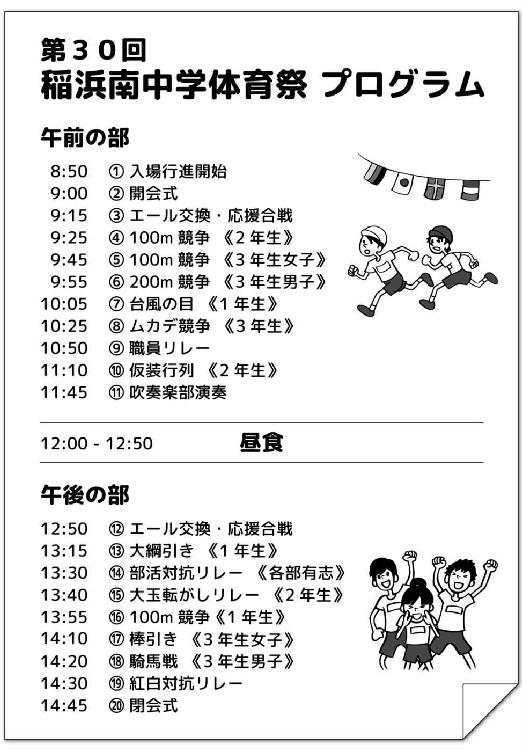
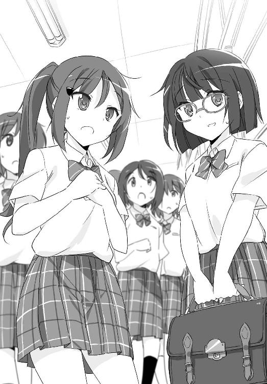
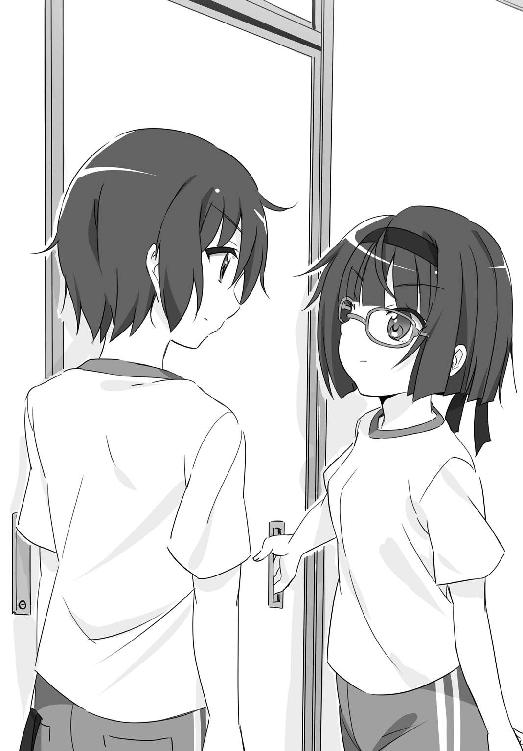
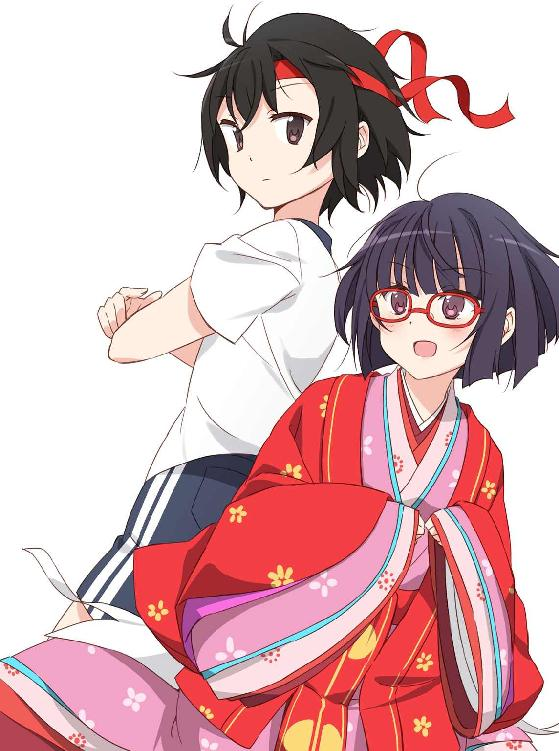
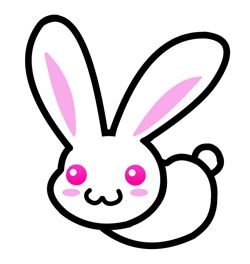

| 髪の毛探偵 石神くん ３ ～おかっぱかぐや姫の仮装行列～ (impress QuickBooks) | |
| 晴海 まどか | |
| (2014) | |
髪の毛探偵 石神くん ３
～おかっぱかぐや姫の仮装行列～
晴海まどか
髪の毛探偵 石神くん◎目次
第１巻（２０１４年12月３日発売）
ひとりぼっちの桜の亡霊▼１．調査依頼は突然に／２．開始早々調査難航／３．拾った本の借主／４．彼女が切った理由／５．ロングヘアの事情
第２巻（２０１４年12月３日発売）
ひとりぼっちの桜の亡霊▼６．亡霊が抱える事情／インターミッション １
茶パツおばけの肝だめし▼１．六月の肝だめし／２．肝だめしその後／３．神社で探しもの／４．オカルト研究会／５．偽物でなく人毛／６．茶パツのおばけ／インターミッション ２
第３巻（本書）
おかっぱかぐや姫の仮装行列

１．おかっぱかぐや姫
『今は昔、竹取の翁という者有りけり』
という書き出しで始まる、作者不明の日本最古の物語、『竹取物語』。現代でも、そのあらすじを知らない人はほとんどいないんじゃないかと思う。竹の中にいたかぐや姫はおじいさん夫婦に育てられ、押しかけてくる求婚者たちを、無理難題を出して追い払い、無下にされてもめげなかった帝とは歌のやり取りで静かに愛を育み、だが最後は月に帰ってしまう。こんな風に表現したらどこかから怒られるかもしれないけど、ＳＦラブコメと呼んでもいい気がするお話である。
そんな『竹取物語』が成立したのは、九世紀の末、平安時代初期だと言われている。平安時代らしく、かぐや姫は人目にさらされず、几帳――現代でいうところの保健室のパーティションみたいなものだ――の中で大事に育てられた。その時代、未婚の女性が顔を見せる風習はなく、かぐや姫も例外ではなかった。竜の首の珠やツバメの子安貝などの無理難題を出された五人の求婚者たちには、一切顔を見せていない。
その代わり、その時代の女性たちは長く美しく伸ばした髪で自分をアピールした。かぐや姫だってもちろんそうだ。当時の絵巻でも、現代の本屋に売っている子ども向けの絵本でも、その髪は黒く長く描かれている。長い髪を美しく保つために、毎日クシでとかしたり、米のとぎ汁で洗髪したりしたという。
髪こそが女性の魅力の重要な判断基準だったなんて、俺としては親近感を覚えてならない。平安時代だったら、この俺、石神永助もそんなに変わり者扱いされなかったんじゃないかと思う。同じく平安時代、西暦一〇〇〇年頃に成立したという『源氏物語』でも、源氏が長く美しい髪に魅せられて近寄った末摘花という女性があまりに醜く驚いた、というシーンがある。源氏のがっかりっぷりが俺にはよくよくわかる気がする。
そんなこんなで、平安時代のお話である『竹取物語』をモチーフにするのであれば、長い黒髪は重要な要素であるはずだった。モチーフというのは、体育祭で我が二年三組がお披露目する仮装行列の話だ。毎年二年生が目の色を変えて取り組む仮装行列に、俺のクラスも真剣に取り組んでいた。
そして、狩野さんも、その一人だったはずなのに。
長い黒髪を理由に、かぐや姫役に選ばれた狩野さん。その彼女はどうして、長かった髪をばっさり切ったんだろう。
◆
梅雨の気配も薄らぎ始めた七月頭。天気はこれ以上ない快晴、日射しが強すぎるくらいですっかり夏だった。
開会式が終わって、応援団によるエールの交換があり、最初の種目は二年生の一〇〇メートル走だった。先刻走り終えた俺は、ゴールからほど近いところにある待機場所に移動しつつ大きく息を吐く。体育会系という単語からは縁遠い、しがない引きこもり系髪好き男子である俺の順位は訊かないでほしい。
どこまでもスカっと晴れ渡った青い空を仰ぐ。遮るもののないグラウンドの真ん中にいると空が広い。
改めて、体育祭が始まってしまった、と思った。なんにも問題は解決してないのに。
俺は待機場所に到着し、列の最後尾についてしゃがんだ。男子全員が走り終わるまではここで待たないといけない。
紅いハチマキがうまく巻けてなくて、ちょいちょいずり落ちてくるのでまた直す。小学校の運動会では紅白帽子というやつで、汗で頭が蒸れて嫌な思い出しかなかったが、中学ではハチマキになって万々歳だった。もっとも、これはこれで今日みたいな日差しの日には頭のてっぺんがこの上なく熱くなるんだけど。頭皮用の日焼け止めクリームっていうのも世の中にはあるが、俺の小遣いじゃ手が出ない。無念。
ハチマキをいじりつつ、周囲に目をやる。なんとなくそわそわした雰囲気だ。もちろんそれはハチマキのせいなんかじゃない。多分、ここにいる大半の二年生は、一〇〇メートル走なんてどうでもいいと思っている。本番はそのあと。
仮装行列。
うちの中学の体育祭の伝統的な出し物、仮装行列。毎年、二年生がクラスごとにテーマを決めて参加する。
体育祭なのになんで仮装行列なんだよ、とその存在を初めて知ったときには内心突っ込まずにはいられなかったが、調べてみたら仮装行列を体育祭でやっている中学・高校というのは全国で少なくない数あるのだった。ダンスと組み合わせたりしてアクロバティックな見せ方もできるので、まぁ体育の一環と言われればそうなんだと納得することにした。
仮装行列は午前の部のメイン競技ともいえた。十一時十分から、一組から順に始まる。それまでに、山車を外に出したり衣装の準備をしたりしないといけない。セットの規模にもよるけど、どのクラスもそれなりにやることは色々あるはずだ。
ハチマキを結んだり解いたりしているうちに男子の滑走が終わった。これでグラウンドから出られる。ぞろぞろと退場する男子と入れ違いに、グラウンド脇、入場ゲートの近くで整列していた女子が、列を崩さぬままスタート位置に移動してきた。体育祭って、ほんとマスゲームだ。
女子の集団の中に狩野さんを見つけた。
頬のすぐ下で、切り揃えられた黒髪が揺れている。
狩野さんのボブヘアを、俺はいまだに見慣れない。
狩野さんが髪を切ってきたのは、体育祭の三日前だった。
――なんで切ったの!?
俺の問いに狩野さんは答えず、笑みを浮かべただけだった。
しばし、教室には呆然としたような空気が流れた。
多分、これがなんでもない時期だったら。髪切ったんだ、似合うねー、なんて女子たちは口々に言い合っただろう。女子というのはそういうことをしないといけない生きものだ。
でも、体育祭三日前というその時期に、狩野さんが髪を切るということには大きな意味があった。
――かぐや姫、どうするの？
誰もが思っていて、でも口にしなかった疑問。真っ先にそれを投げかけたのは、体育祭実行委員で狩野さんとも仲がいい、園村さんだった。
――髪が長いから麗奈がいいよねって話だったじゃん。
教室の入り口に立ち尽くし、曖昧に笑んでいる狩野さんのもとに、園村さんは心配そうな顔で駆け寄った。
――何か、切らないといけない事情でもあったの？
少しの間のあと。狩野さんは笑みを引っ込め、わずかに首をふった。
――じゃあなんで......。
――切りたかったから。
端的にそれだけ答えて狩野さんが沈黙すると、教室は再び気まずい空気に包まれた。

――ほらほらほら！
そんな空気をやぶるように、無駄に明るい声を出したのは和樹だ。
――いーじゃん、かぐや姫がおかっぱだって！
反射的に、よくないだろ！ と声を上げてしまって、和樹に横目でにらまれた。......今のは、俺が悪かった。すぐさま口にチャックする。
和樹が無理やり軽くした空気の中、園村さんは肩をすくめた。それはそうかもしれないけど......とため息をついた園村さんに、でも狩野さんははっきりとした口調で返す。
――私も、よくないと思う。
園村さんがすぐさま眉を寄せ、和樹の努力は無に帰した。狩野さんは畳みかけるようになおも続ける。
――ここまで、色々こだわってきたんだもん。かぐや姫の髪も長い方がいいよ。
みるみるうちに、園村さんの顔が険しくなっていく。
――じゃ、なんで切ったの？
今にも狩野さんに掴みかかりそうな園村さんの気配に気づき、女子たちが二人の間に入った。でもって、おかっぱでもなんでもいいじゃないか、とどこまでも明るくバカの一つ覚えのようにくり返す和樹に、険悪な空気をどうにかすべくクラスメイトたちは次々と賛成し、その場はうやむやになったのだった。
あのとき。
何か言いたげな狩野さんの視線とかち合った、気がする。けど結局、狩野さんが何を言いたかったのか、俺にはわからなかった。
はっきりと怒って見せた園村さんに劣らず、俺もあのときは釈然としなかったのだ。
狩野さんは中学入学以来、髪を短くしたことは一度もなかった。その狩野さんが、よりにもよって体育祭の三日前に髪を切ったのだ。すんなり納得なんてできるわけがない。
髪を切ることが俗世と縁を切ることと等しかった時代と現代じゃ、そりゃ意味は違う。別に僧になるってわけでも、世間と縁を切るってわけでもない。髪を切るのは個人の自由、趣味の問題以外の何ものでもない。
でも。
体育祭の件を横に置いておいたとしても。ずっと伸ばしていた髪を切るのって、やっぱりそれなりの覚悟とか事情とか、そういうのが必要なんじゃないかと思うのだ。少なくとも、髪を切られてぶっ倒れたことがある俺にはそう思えた。
女子が髪を切る事情で単純に思い当たるのは『失恋』だったけど、そんなものと狩野さんは結びつかなかった。そんな――なんて言ったら世の中の恋する乙女たちに袋叩きにされるかもしれないけど――あくまで個人的なそんな事情でもって、狩野さんがクラスの仮装行列に水を差すようなことをするとは思えなかったのだ。今回の狩野さんの行動が、仮装行列に向けて一丸となっていたクラスに投げかけた波紋はあまりに大きい。でもって、そんなことすら予想できないような狩野さんじゃない、と俺は思う。
......などと、それ相応の事情があるに違いないと冷静に思えたのはその日の夜だった。あのときは俺の方もそこそこ衝撃を受けていてそんなことまで頭が回らず、狩野さんと園村さんの険悪なやり取りを遠巻きに見ることしかできなかったのだ。でもって、一晩経ってしまうと、改めてそういう話題を切り出すのは、すごく難しい。
おまけに、クラスの中心人物であり、誰よりも仲がよかったはずの狩野さんと園村さんは――というか主に園村さんの側だけど、それ以来すっかり険悪な雰囲気になってしまった。おかげでクラスの空気までギッスギスだ。
かくして、かぐや姫のおかっぱ問題も二人の関係も何一つ解決しないまま、体育祭当日を迎えたのだった。
◆
始まった女子の一〇〇メートル走を横目に、男子はぞろぞろとトラックから退場した。退場するやいなや、校舎の方に走っていく者も少なくない。みな必死だ。
楕円形のトラックを囲むのは、生徒のための応援席、体育祭実行委員のテント、そして残り半分は保護者席。保護者席はかなり広く設けてあるが、花見のようにシートがびっしりと敷き詰められてて満員御礼という感じだった。カメラの三脚が群れをなしている。熱心な親になると、朝早くから場所取りをしたりもするらしい。驚くべきパワーだ。
かくいう俺の両親も、例にもれずで来ているはずだった。わざわざ来なくてもいいって言ったのに、地方で単身赴任中の母親は昨晩家に帰ってきた（髪を切った俺を見た瞬間、面白いくらいに褒めちぎった。喜んでいるところ悪いので、また伸ばすつもりであることは黙ったままだ）。
中学に入ってまで親が体育祭を見に来るものなのか疑問だったが、まぁこの様子だとかなりの家が見に来ているんだろうなと思う。
永ちゃん、と後ろからやってきた和樹に声をかけられた。ほら、と体操服の胸元に貼ってある金色のシールを自慢げに見せてくる。
「皆勤賞でも取った？」
「僕は一〇〇メートル走一位だったけど、永ちゃんが何位だったかは訊かないよ」
「俺は頭脳派なんだ」
和樹に小突かれつつ、一緒に校舎の方、昇降口に向かった。昇降口で上履きに履き替えつつ、時計を見やると九時四十分だった。十一時十分の仮装行列まであと一時間半。うちのクラスの出番は三番目だ。
校舎の中はガランとした空気だった。日陰だからか空気もどことなくひんやりしている。外から聞こえてくる声援や音楽が遠い。開会式以降、校舎内に戻ってくるのは二年生だけだし当然といえば当然だけど。
三階の二年三組の教室まで戻ってきた。教室後方のスペースは、この一ヶ月弱で造り上げた山車やらなんやらにすっかり占領されている。
「とりあえずこれを下ろさないといけないのか......」
自分たちで作ったものながら、改めて見てみてため息がもれた。
山車は計四台。今さらながら、造っているときは造ることに夢中になりすぎていて、三階から一階に下ろすことをまったく考えてなかったことが悔やまれる。特に、最初の竹藪の山車が重量的にかなりある。雨宮弟がおじいさんの家からもらってきたという立派な竹を、調子に乗ってこれでもかこれでもかとぶっ刺した。おかげで竹藪を切り取ってきたような雰囲気には仕上がったけど、何かを間違えた気がしてならない。
どれから運ぶべきか考えている俺の横で、和樹はさっそく烏帽子を頭に載せていた。
「お前、それかぶるのはまだ早いだろ」
「そう？ とりあえず着替えちゃえばいいんじゃない？」
その方がテンション上がるし。いやいや、テンションとか関係ないし。
「それに、和樹がかぶるのは烏帽子じゃなくて冠だ」
冠というと、ヨーロッパの童話などでよくあるような輪っか状のものを想像しがちだけど。日本の平安時代のそれは、ひな人形のお内裏様がかぶるような、後ろの方が上に出っ張った黒い帽子みたいな形のものだ。後ろには纓と呼ばれるしっぽみたいに垂れ下がったものがついている独特の形である。
というわけで、冠をかぶることになっている和樹は帝役である。話し合いでは決着がつかず、くじ引きの結果そうなった。
『竹取物語』に登場する帝といえば、かぐや姫に執心し、ほかの求婚者たちとは違って強引にその姿を見ることに成功し、三年にもわたって歌を交わし合い徐々に心を通わせていく、いわば王子様役だ。といった事情もあり、積極的に手を上げる男子がいなかったのである。
和樹に決まったら決まったで、イメージじゃない、なんて園村さんは遠慮なく言い放ち（じゃあ誰ならイメージに合うのか、と訊く勇気がある者はいなかった）、対する和樹の方も、僕もそう思う、とカラカラ笑っていた。和樹に決まってよかったと俺は心から思った。
そんな和樹の相手をしているうちに、一〇〇メートル走が終わった女子たちも教室に戻ってきた。遊んでないでよ！ と軽く怒られる。理不尽だ。
やれやれといった表情の狩野さんが、和樹の頭から烏帽子を取り上げる。
「今からつけてたら壊れちゃうよ」
ごめんなさい、と和樹は素直に謝った。
烏帽子片手にため息をついた狩野さんと目が合った。つい、視線はその赤いメガネから、ボブヘアの方に行ってしまう。
――カツラは？
そんな風に狩野さんに訊いたのは、おとといの放課後。仮装行列のリハーサルを体育館で行って、すべての道具類を教室に戻したあとだった。山車の運搬ですっかりへばっていたが、教室のすみで衣装を畳んでいた狩野さんにここぞとばかりに声をかけた。
狩野さんはメガネの奥で目をしばたたいて、首を傾げただけだった。何を考えてるのかよくわからない表情だった。切り揃えた髪がサラサラ流れたのをよく覚えている。短くなったおかげで、狩野さんの髪の動きは以前よりも目につくようになった。
――カツラ、つけるのはどう？
その日のリハーサルでも。やっぱり、おかっぱ頭に十二単というのはしっくりこないなぁと思っていた、というのもあるんだけど。
それより何より、髪を切って以来、狩野さんが園村さんとまともに口をきいていなそうなのが気がかりだった。狩野さんが話しかけに行っても、園村さんの方が完全に無視している。
せめて髪の問題だけでもどうにかすれば、園村さんの怒りも少しは収まるんじゃないかと、単純な俺は思っていたわけだけど。
――カツラって、石神くんがこだわってた、床につくくらいの長さ？ それくらい本格的なら考えようかな。
――......それ、あと一日で調達できると思って言ってる？
言ってない、と浮かんだ狩野さんの笑みは意地悪で、少々悔しくなる。
――新しいカツラは無理だけどさ。ほら、オカ研のカツラ。
かぐや姫の理想の長さには遠く及ばないけど。オカ研の部室には、例の肝だめしで使った黒髪のカツラがあるはずだった。あれだったら、もともとの狩野さんの髪の長さと大差ないはずだ。安物だけど、ちゃんととかして整えれば、それなりの見た目にはなる気がした。
が、狩野さんは俺の提案を聞くなり首をふる。
――ごめん。それじゃ意味がないから。
意味ってなんだと俺に訊く間も与えず、考えてくれたのにごめんね、と大人びた口調で謝って、狩野さんは背を向けてしまったのだった。
永ちゃん、と和樹につつかれてはっとする。
「出番だよ」
「出番？」
なぜか俺に教室中の視線が集まっている。
「段取りの確認しろだって」
「なんで俺が」
「永ちゃん、一応リーダーじゃん」
言われてみればまぁそうだった。山車グループの取りまとめ役になっているのだ。
こういうのこそ体育祭実行委員の園村さんがやればいいのにと内心でぶぅ垂れつつ、園村さんの姿が見えないのに気づく。そういえば、一〇〇メートル走が終わってから、教室ではまだ見かけていない気がする。体育祭実行委員の仕事でもやってるんだろうか。
というわけで、渋々黒板の前に出た。今後の段取りと時間の確認をする。山車を一階、体育館脇の決められた待機スペースまで運んで、それから衣装の準備。遅くとも出番の十分前には入場ゲート近くで待機。
ただでさえ暑いってのに、人前でしゃべるのは得意じゃなくて変な汗が浮かんでくる。ほんと、こういう役には向いてない。髪を愛でるのにコミュニケーション能力は不要だ。
幸いにも滞りなく確認は終わってほっとした。それじゃ、いざ手分けして山車を運ぼう、という段になって。
狩野さんがきょろきょろしているのが見えた。近くの女子に声をかけている。
「アヤは？」
園村さん、まだ戻ってきてないのか。
「体育祭実行委員じゃない？」
「仮装行列の準備の間は、体育祭実行委員の仕事、ないって聞いてたけど......」
にわかに沈黙が降りてくる。誰かがぽつりと言った。
「じゃ、どこに行ったの？」
２．なくなったカツラ
体育祭の最中は、携帯電話は教室に置いていくルールになっていた。女子の一人が園村さんにかけてみたものの、教室に置いてある園村さんのバッグの中からバイブレーションの音が聞こえてくるだけだった。
体育祭実行委員は基本的に応援席ではなく、本部テントで待機していることが多い。もしかしたら、園村さんは何か用があってそっちにいるんじゃないかという話になった。
「時間だってのに何やってるんだろ」
狩野さんは少しむすっとしたような顔になり、短くなった自分の髪に触れた。わずかに下唇を噛み、だが気を取り直したように表情を明るくする。
「放っといてもそのうち戻ってくるって」
さっさと準備始めよ、と言って狩野さんは会話の輪から抜けた。どこか強がっているような雰囲気すら漂う狩野さんを見て、結局、女子の何人かが体育祭実行委員の本部テントに様子を見に行くことになった。
首を傾げててもしょうがない、園村さんのことはとりあえず女子たちに任せよう。残ったメンツというか、主に男子で山車の運び出しに着手する。タイヤがついているので教室から廊下までは転がせばいいものの、階段は担いで運ぶしかなかった。
せーの、で八人で持ち上げた。重い。声をかけつつ、ゆっくり足下に気をつけながら階段を下りていく。
おとといのリハーサルのときに、山車を初めて教室から運び出した。最初は五人で運ぼうとしたのだが、予想以上の重さでふらついて倒しそうになり、最終的に八人がかりで運ぶことになった。リハーサルのあとには再び教室に戻さなくてはならず、帰宅する頃にはみんなすっかりバテていた。三階から一階への運搬も考慮して造った方がいいって情報は、きちんと先輩から後輩に引き継がれていくべきだと思う。
ひぃひぃ言いながらなんとか一階に到着して小休止。
額の汗を手の甲でぬぐって、俺は今しがた下ろした山車を見た。かぐや姫役、つまりは狩野さんが乗ることになっている山車だ。
モチーフは、かぐや姫を迎えに来る天女の飛車だった。かぐや姫が座るところには柔道部から借りてきた畳が使われていて、それなりの見た目になっている。四つの柱に支えられた屋根がついていて、足下はもくもくした白い雲で覆われていた。月に昇るイメージなので、四つの山車の中で一番高さがある造りになっている。土台部分は廃材で、飾り部分は段ボールで基本は作ったけど、屋根を支える柱には竹を使っていたりと、見た目にはちょっとこだわっている。
ここから先は山車を転がすだけなので八人もいらない。うちのクラスの待機場所をもう一度説明して、残りの運搬を三人に任せて俺はまた三階に戻る。
『紅組、リードしています！ 白組、がんばれがんばれ！』
階段を上っていたら、そんな放送が聞こえてきた。階段の踊り場の窓からグラウンドを見下ろすと、一年生の競技、『台風の目』をやっている。四人一組で長い棒を持ち、決められたコースを走っていく競技だ。
「あれ、なんで『台風の目』って言うんだろーね」
いつの間にか、和樹も俺の背後からグラウンドを見下ろしていた。
「回るからだろ」
コースにはところどころ三角コーンが置いてあり、その場所に来たらコーンを中心にぐるっと回るのだ。そして、コースを走って戻ってきたら両端の走者二人だけが残り、待っている走者たちの足の下に棒をくぐらせ、さらに棒を頭上にも通し、次の走者にバトンタッチする。何気にコツがいる団体競技でもある。
和樹は納得していない顔で、うーんと唸った。
「目が多すぎる気がする」
確かに。
「コーン、四つもあるしな」
「台風発生しすぎ」
足を止めたせいか中途半端に脱力してしまい、しばしグラウンドを見下ろして立ち止まってしまう。
棒を持ってぐるっと回る一年生がいるトラックの手前に、体育祭実行委員のテントが見えていた。ここからだと白い屋根が見えるだけで、中の様子はわからない。
つれだって園村さんを探しに行くなんて大げさな、ってさっきは思わなくもなかったけど。狩野さんほどきっちりしてて真面目ってイメージじゃないけど、園村さんは責任感が強い性格ではあった。クラスの仮装行列には誰よりも真面目に取り組んでたし、だからこそ髪を切った理由を一切話さない狩野さんに怒ってる。そんな園村さんが、準備の時間になっても教室に戻ってこないというのは、おかしな話ではあった。
俺に劣らず脱力している和樹の背中を叩いた。行くぞ、と声をかける。
「あと三台もあるんだぞ」
もうくじけそう、だなんて弱音を吐く和樹を引っぱった。
◆
すべての山車を一階に運び終えたときには、予想どおりだけどすっかり汗だくになってしまった。七月頭、気温は三十度に届かないとはいえ、暑くないわけじゃない。湿度も高いし。シャワーでも浴びてすっきりしてブローし直したい。もちろんそんな時間ないけど。
階段を上りつつ、園村さんを探しに行った女子たちは教室に戻ってきただろうかと考える。
教室に戻ったら衣装を着て、髪をセットしないといけない。といっても、髪のセットに男子はほとんど関係ないけど。平安時代、貴族や公家、武家などの一定の地位にある男性は、伸ばした髪を頭のてっぺんで束ね（この結った髪を髻という）、その上に冠や烏帽子をかぶせていた。長かった頃の俺の髪なら、それを忠実に再現できたかもしれないのが悔しい限りである。でもって、そんな髪型を再現できる長さのある男子なんて、うちの中学の校則を考えたらいるはずがなかった。
三階の廊下に戻ってきたら、おー、と和樹が誰かに声をかけた。その誰かを、すごい色だな、と思いつつ見ていたら、何？ と見返された。和樹からワンテンポ遅れてようやく誰だか認識した。
オカ研ことオカルト研究会の会長、雨宮兄だ。双子の弟が俺のクラスにいることもあり、俺の中では『雨宮兄』という呼び名がすっかり定着してしまっている。つまりうちのクラスの山車に使った竹の提供者は、雨宮兄のおじいさんでもあるってことだ。
雨宮兄は、体操服の上からなんだか妙ちくりんな紺色のジャケットを着ており、そのジャケットと同じような色のカツラを目深にかぶっていた。トレードマークのたてがみ風の前髪がなくて、瞬時に誰だかわからなかった。あいかわらず、俺の顔認識機能は性能が悪い。
「三組の山車がやたらと大きくて多かったって噂になってたぞ」
聞いたところ、雨宮兄の四組で用意している大型のセットはお神輿一つだそうだ。その分、衣装とダンスの方に力を入れたらしい。雨宮兄がかぶっているカツラもその一環のようだ。ちなみに、テーマは今流行りのＳＦアニメだという（タイトルを聞いても俺にはよくわからなかった）。
長さだけなら狩野さんのボブヘアと同じくらいだったが、雨宮兄のカツラの方は、毛先が不自然なくらいにくるんと内側に巻いていた。
「触ってもいい？」
俺の言葉に、別にいいけど、と答えつつも雨宮兄は少し眉を寄せた。
「石神ってカツラにも興味あんの？」
「興味はある。あ、もちろん本物の方がいいけど」
カツラに触れる機会なんてそんなにない。カツラにじっくり触れたのだって、先月、オカ研の肝だめしで使われたカツラが初めてだったのだ。
雨宮兄が若干嫌そうな顔をしたので、カツラの毛先に触れるだけにした。毛先はカットしたての髪みたいに、すぱっとまっすぐに切れている。内巻きカールはしっかりとクセがついていて触ってもびくともしない。もう少し長くしてこのカールをふんわりさせると名古屋巻きになりそうだ。......名古屋巻きになった雨宮兄を想像してしまって残念な気分になる。
ねぇねぇ、と首をめぐらすように四組の教室の中を覗いてから、和樹が訊いた。
「もしかして、クラス全員分のカツラ用意してるの？」
「そうそう。女子たちがどこかから安く調達してきた」
へぇ、と素直に感心した。その気になっていれば、床に届くくらい長い髪のカツラもどこかで用意できたのかもしれない。
もっとも、平安時代の美人の象徴であった身長よりも長い、床に届くほどの髪というのが実在したかと問われると、これは非常に疑わしい。髪の伸びる速さと髪の寿命を考えると無理があるのだ。一般的に、一年間に伸びる髪の長さは十センチ程度で、髪の寿命は三年から五年と言われている。つまりは五十センチだ。もちろん個人差はあるし、髪が丈夫で床に着くくらいまで伸ばせる人もいるらしいが、そんなのはレアケースだろう。とにかく長さが足りないのだ。そこで、当時の女性たちはカモジやビンと呼ばれる添え髪、要はつけ毛のようなもので髪を補って長くしていたそうだ。今も昔もカツラやつけ毛には需要があるということだ。
ますます、カツラを用意すれば狩野さんの問題も万事解決だったんじゃないかなんて思えてきてしまった。まぁ、意味がないって言われたわけだけどさ。
せっかくなので俺も訊いてみる。
「これ、色ついてるよね？ 高くないの？」
「詳しいことはわからないけど、染め直したみたいだよ。金とか銀とか、明るい色のカツラをカラーリングしたんだって」
なるほど。人毛だったらカラーリングなりブリーチなりで色を抜いてから着色するが、カツラの場合は最初から色を足すのか。いやはや、勉強になった。
永ちゃん、と和樹に腕を引かれた。
「カツラはいいから、そろそろ教室戻った方がいいんじゃない？」
和樹に急かされるなんて、どれだけじっくりカツラを見ていたんだろう。知的好奇心でいっぱいのところ、非常に残念だ。とはいえ、あと一つだけ、と喰い下がる。
「このカールは？」
あぁこれ？ と雨宮兄はカツラの毛先、くるんと内巻きになっている部分に触れた。
「ドライヤーとか毛を挟むやつでやったみたいだぞ。今朝、女子が早めに教室来てやってた」
毛を挟むやつ。ヘアアイロンだろうか。
永ちゃん、と和樹に再び引っぱられた。
「戻らないとまたトラブるよ。ってか怒られる」
「わかってるって」
「何、三組も何かトラブってんの？」
雨宮兄の言葉に和樹が訊き返した。
「『三組も』って、四組も何かあるの？」
雨宮兄はチラと四組の教室の方を見た。
「カツラが一つ足りないって、それで朝、騒いでた」
和樹にじとっと見られた。一応言っておくけど、と断っておく。
「俺じゃないからな」
「誰もそんなこと言ってないって」
まぁ代わりは用意できそうだし大丈夫だと思うけど、と雨宮兄は補足した。
そんなこんなで、じゃあな、と三組の教室に行こうとしたのだが。そうだ、と今度は雨宮兄に引き留められた。
「奥先生って、科学研究会の顧問じゃなかった？」
突然出されたその名前に心臓が跳ねた。
「そうだけど......」
七月になっても、奥先生は学校に来なかった。
科学研究会は新しい顧問が決まるまで活動休止ということになっていたが、そもそもろくな活動をしていなかったことが先生方にバレたのかも知れない。丸一ヶ月、新しい顧問が決まる気配もなく、活動休止状態が続いたままである。
「奥先生を見たってやつがいてさ」
「今日？」
「もちろん」
苦い思いが広がって、少し脈が速くなったような気がした。桜の亡霊の――奥先生の件は、俺の中ではいまだにすっきりなんてしていなかった。
「どこで？」
つい前のめりになってしまった。体育祭だから奥先生は来たんだろうか。それとも、別の用事があって？ 少なくとも、体育祭と奥先生はあまりに結びつかない。職員リレーに出るわけもないし。
雨宮兄は一歩引いて、さぁ、と肩をすくめた。詳しいこと、俺は知らないけど。
「あの先生、あまりいい話なかったじゃん。気味悪がってたやつも多かったし。それで、カツラがなくなったの、奥先生のシワザなんじゃないかって女子たちが噂しててさ」
「......なんだよそれ」
少しの間のあと。
永ちゃん？ と顔を覗き込んでくる和樹の声にはっとした。雨宮兄も怪訝そうに俺を見ている。
「石神、どうかした？」
なんでもない、とごまかした。
今しがた、自分はどんな顔をしてたんだろう。
じゃあ、と今度こそ雨宮兄と別れて、すぐ隣の三組の教室に入った。
教室では、すでに衣装の準備が始まっていた。衣装グループの女子たちが烏帽子を配ったり、段ボールで作った鎧を装着したりしている。
「石神くんも立川くんも遅い！」
狩野さんにどやされ、すみません、と反射的に謝った。狩野さんの近くにいた衣装グループの女子たちに、立川くん早く！ と和樹は呼ばれていく。帝役なのでさっさと着替えさせてしまおうということなのだろう。
和樹の衣装は、直衣と呼ばれる、現代の皇族でも儀式のときに着る装束だった。もちろん、本格的なものなんかじゃなくて、買ってきた布でそれっぽく作ったものだ。座って山車に乗るからどうせわからないだろうというわけで袴も適当だし。
またしても烏帽子と冠を間違えている和樹を横目に見ていたら。数人の女子たちがバタバタと教室に戻ってきた。園村さんを探しに行っていた子たちだ。彼女らはそのまま狩野さんのところに向かい、何やらごちゃごちゃとしゃべっている。
もしかして、と誰かの声がこちらまで聞こえてきた。
「仮装行列、出ないつもりなのかな？」
何を言い出すんだとぎょっとしたのは俺だけじゃなかったはずだ。にぎやかだった教室はにわかにトーンダウンし、そして狩野さんの表情は即座に曇った。
「......私が見てくる」
そう宣言した狩野さんに女子たちは顔を見合わせた。狩野さんは場を和ませるように、口元にわずかに笑みを浮かべる。
「みんな、先に準備進めてて」
「でも――」
「私のせいかもしれないし。アヤを探して、話してくるよ」
そう言い置いて、狩野さんは教室を飛び出していってしまった。
呆気に取られたような空気になっていて、誰も狩野さんを追いかけなかった。俺は戻ってきた女子の一人に声をかける。
「園村さん、いなかったの？」
その子は頷いた。
「グラウンドも探してみたんだけど......。本当に、出ないつもりなのかな」
廊下に顔を出した。狩野さんの姿はもう見えなくなっている。
３．彼女である必然性
携帯電話を手にして俺も教室を出た。和樹はともかく、俺自身はそんなに衣装周りで準備することはなかったし（俺の役は武士その３だ）、時間にはまだ余裕がある。
昇降口を出てグラウンドを見ると、一年生の『台風の目』はとっくに終わっていて、次の競技の準備をしているところだった。うっすらと聴いたことがあるようなＪポップが流れている。しばらく校舎内にいたせいか、日射しをいっそう眩しく感じた。
仮装行列の準備で出払っている二年生の応援席は、当然ながらすっからかんになっている。もちろん、そこに狩野さんも園村さんもいない。
園村さんを探しに出て行った狩野さんはともかく。園村さんはまったくもって、どこに行ってしまったんだろう。
一〇〇メートル走のあと、一度も教室に戻ってきてないのは間違いない。荷物は教室に置いたままだったし、体操服のまま学校を出て行ったっていうのは考えにくいし。学校の敷地内にいるって考えるのが普通だけど、女子たちが手分けして探しても見つからないほど広いわけじゃない。犯罪絡み？ まさか。
紅組の応援席で立ち尽くしていたら、額からまたハチマキがずり落ちてきた。もうすぐ着替えないといけないしもう取ってしまうか。と思っていたら、思いのほか固く結んでしまっていて解けない。ちょっとイラついてしまい、輪っかのまますぽっと頭から取り外したところだった。
「石神くん？」
背後からかけられた、なんとなく聞き覚えのある男性の声にふり返る。
下ろした茶パツのロングヘア。染め直したのか生え際がプリン状態ではなかったが、すぐに誰だかわかった。
園村さんのお兄さん、聡太さんだ。
ラフなＴシャツとジーパン姿で、首から提げた大きなカメラの存在感がハンパない。カメラの目的はあまりに自明だ。
お久しぶりです、と軽く頭を下げた。こちらこそ、なんてにこやかに返される。なんだかんだで、あの肝だめしからもう一ヶ月近く経っている。
「誰もいなくてびっくりしたよ」
そう空の応援席を見やった聡太さんに答える。
「仮装行列の準備で、みんな校舎の方にいるんですよ」
あぁ、そういえばそうだったそうだった、と聡太さんは頷いた。
「六年前のことだからすっかり忘れてたよ」
そうか、聡太さんもうちの中学のＯＢなのか。
「聡太さんのとき、仮装行列のテーマ、なんだったんですか？」
「うちのクラスは『スター・ウォーズ』だったよ」
懐かしいなぁ、と聡太さんは目を細め。じゃあ、と続けた。
「それまで、二年生は出番なし？」
「そうですね。一〇〇メートル走はもう終わっちゃいましたし」
そうなのかー、と聡太さんは面白いくらい眉毛をハの字にした。『ガッカリ』って顔に書いてあるみたいだ。わかりやすい人っていうのは聡太さんみたいな人のことを言うんだなと思う。どちらかというと、俺は何を考えてるのかわからないって言われることの方が多い。何を考えてるも何も、髪のこと考えてるってだけなのに。
どうせならもっと早く来ればよかったな、と聡太さんは首から提げたカメラをなでた。
「ちなみに、一〇〇メートル走、アーヤが何位だったか知らない？」
「あー、ちょっと見てなかったです......」
これくらいの空気は俺にも読めるので、『アーヤ』ってなんだってツッコミはしない。園村さんこと園村彩夏。狩野さんとは別の意味で恐れられている園村さんを『アーヤ』なんて呼ぶ男子は、俺も含めてもちろん学校にはいない。
「アーヤは足、速いからね。きっと順位はよかったと思うけど！」
にこやかを通り越してにまにましている聡太さんに、そうですね、と答えてもう一度そのカメラを見た。聡太さんのことだ、きっと『アーヤ』コレクションとか作ってるに違いない。
俺なんぞに思われたくないだろうけど、改めて、残念な大人だ。
「仮装行列って、十一時十分からだっけ？」
「よく知ってますね。うちのクラスは三番目なんで、出番は多分十一時半くらいですよ」
プログラムって来場者に配られたりするんだろうか。あ、校門の方に貼ってあったかもしれない。いや、そもそも聡太さんレベルなら、園村さんが持っているプログラムをこっそり見るくらいはしそうだ（園村さんが自主的に聡太さんに見せている図は想像できなかった）。
「アーヤを見るなら仮装行列がオススメだって、狩野さんに聞いたんだ」
「狩野さんに？」
つい首を傾げてしまった。
園村さんは仮装行列のクラスのリーダーではあるが、役自体は目立つものじゃない。かぐや姫の山車を引っぱる天女だ。ピンク色の衣装を着たりはするけど、そんなに凝ってないし。
まぁ、だからって仮装行列を見るなってわけじゃもちろんない。園村さんが中心になってがんばってたのは事実だし。
でも。
「午後の紅白リレーとか、部活動対抗リレーのことは聞きました？」
何それ、と聡太さんは目をまたたいた。
「それにもアーヤ出るの？」
「代表選手になってますよ」
おぉぉ！ と突如上がった歓喜の声に一歩引いた。情報ありがとう！ と聡太さんは目を輝かせ、俺に逃げる間も与えず手を握ってくる。いえ、と小さく返した。
狩野さんは、どうして午後の部のこと、聡太さんに教えなかったんだろう。
聡太さんが言うとおり、園村さんは足が速くて、午後の紅白リレーの選手に選ばれていた。それに、同じく午後にある部活動対抗リレー――勝負というよりはお遊びに近い種目で、例えば剣道部だったら道着を着て竹刀をバトンにするなど、部の特色を生かした格好・道具で出場する――にも、オカ研として出る予定だった。なんだかんだで、すっかりオカ研の準会員的な扱いになってしまっている俺にも、部活動対抗リレーに出ないかと雨宮兄から打診があったので確かだ。もっとも、俺はあんまり足が速くないし断ったけど。
聡太さんは腕時計を見た。
「あと一時間くらい、待つしかないか」
暇だなぁ、と呟いている。
「一人で来てるんですか？」
「来たのは一人でだけど。あとから親も二人とも来るよ」
「一家総出なんですね」
あれ、と思い出す。園村さんのお母さんは入院してるって、前に狩野さんから聞いた気がする。
「まぁ、こういうときくらいはねぇ」
じゃ、準備がんばって、と聡太さんは軽く手をふって去っていった。
◆
色々と愉快な聡太さんとしゃべったおかげか、俺の中にあった焦燥感みたいものは少し薄らいだ。俺がここでこうしててもしょうがない。教室に戻るか、と思ったそのときだった。
「石神くん！」
またしてもかけられた声。だが今度は声の主がすぐにわかって、慌ててふり返った。
狩野さん。
息せき切らせ、一人でこちらに駆けてくる。
額に汗を浮かべ、狩野さんは訊いてきた。
「今の、アヤのお兄さん？」
そうだけど、と聡太さんが去っていった方向を見やった。つられたように狩野さんもそっちを見る。保護者席の方はどこぞの花見かと思うような混雑っぷりで、聡太さんの姿はもうわからなかった。
狩野さんは額を少しぬぐって俺に向き直る。
「お兄さん、何か言ってなかった？」
「何かって？」
「一人で来たって言ってた？」
「来たのは一人って言ってたけど......あ、両親もあとから来るって」
そう......と考え込むような顔をして、狩野さんは続ける。
「じゃあ、アヤはお兄さんのところに行ってるわけじゃないんだね」
だと思う、と俺が答えると、狩野さんは思いっきり肩を落とした。疲れたのか、空いている近くの応援席にストンと座って両手でひざをぎゅっとくっつけた。
「園村さん、見つからないの？」
狩野さんは頷いた。
「一〇〇メートル走のあとに、体育祭実行委員のテントに一度戻ったらしいんだ。テントで四組の実行委員の子と話してるのを見たって子がいて。でもそのあとはすぐに校舎の方に戻ったって......」
狩野さんはいら立たしげな様子でリップクリームを取り出して唇にすばやく塗った。
「どこほっつき歩いてるんだろ。準備だって色々あるのに」
怒ったような口調ながら、狩野さんの顔にはいら立ち以上に焦りがうかがえた。いつもの余裕は完全に消えてしまっている。
狩野さんはそのままの表情で俺を見上げた。
「私のせいだと思う？」
「何が？」
「アヤがいなくなったの。私が、髪、切ったから？」
とっさに言葉を返せなくて、目を合わせたまま動けなくなる。
髪を切ったこと。それを狩野さん自身も気にしていただなんて、少し考えてみれば当たり前だったはずのそのことを、俺は初めて知った気がした。
狩野さんのまっすぐな視線からわずかに逸らして、その、と口を開く。
「園村さん、そんな理由で仮装行列、放り出さないと思うけど」
狩野さんの目元が緩んだ。そうだよね、と自分に言い聞かせるように頷く。
「それにせっかく――」
何かを言いかけてはっとしたような顔になり、狩野さんは口をつぐんだ。
そんな狩野さんを見ていて、そうだ、とたった今思いついたことを訊いてみた。
「昇降口は確認した？」
「昇降口？」
「スニーカーがあれば校舎内にいるってことだし、上履きがあるなら外にいるんじゃないかな」
「そっか！」
ぱっと立ち上がり、駆け出そうとする狩野さんの手首をとっさに掴んだ。
「何？」
さっさと離せと言わんばかりの視線を向けられた。ごめん、と小さく謝って、勢いで掴んでしまったこの手はどうしたもんかと思いつつ、でも、掴んだままにした。あとで怒られても、またいなくなられるよりはいい気がする。
「衣装の準備、始まってる」
「わかってるよ。だから急いでるんじゃない！」
「狩野さんも準備しないと」
そんなの、と狩野さんは眉を少し寄せ、いら立たしげに一つ足踏みをした。
「私は大丈夫だから」
「リハのとき、大丈夫じゃなかったじゃん」
かぐや姫の十二単。帝の衣装と同じで、これももちろん十二枚重ねて着るようなちゃんとしたものではない。園村さんがお母さんから借りてきたという、真っ赤なふりそでを緩めに着て、十二単っぽく見えるように作ったそでと襟を中に装着するのだ。これがなかなか調整が難しくて、リハーサルのときも着るのに苦労していたのを覚えている。
「私は平気！ それよりアヤがいないと――」
「いないと何？」
狩野さんは再び唇を結んでしまった。
「時間あるし、俺が探すよ。ほかにも着替えに時間かからないやついるだろうし、手伝ってもらえば――」
力いっぱい、掴んだ手をふり解かれる。
「私が探さないとダメなの！」
狩野さんは自分のボブヘアに手を突っ込んだ。あごのラインで切り揃えられた黒髪。四日前までは長かったはずの黒髪。
なんでこんなに頑ななんだろう。
狩野さんは、少なくとも園村さんを困らせようなんて思ってないはずだった。今だってこんなに心配してる。昨日までだって、園村さんに無視されても何度もめげずに話しかけようとしていた。狩野さんは、園村さんと仲違いしたかったわけじゃない。
なのに、髪を切った。園村さんとの関係が悪化するって予想ができそうなのに......。
ふいに浮かんだ考えに、もしかして、と訊いた。
「髪切ったのって、園村さんのため？」
狩野さんの顔に、面白いくらいに動揺が走った。返事がなくてもＹｅｓと言ってるようなものだ。
もし本当にそうなら。これまでの狩野さんの不可解な発言に納得がいった気がした。『それじゃ意味がないから』というあの言葉にも。
「髪を切って、園村さんにかぐや姫役、譲るつもりだったの？」
狩野さんが髪を切る。すると、うちのクラスで狩野さんと同じくらい髪が長い女子は、園村さんだけってことになるのだ。
狩野さんがかぐや姫役に決まったのは、髪が黒くて長いからだ。色はともかく、特に俺がこだわっていたのは長さの方だった。園村さんの髪は茶色がかってはいるが、その点を除けば、今、うちのクラスで園村さん以上にかぐや姫役がぴったりな人はいないとも言える。ほかに肩甲骨に届くくらい髪が長い女子はいない。
それなら、聡太さんに仮装行列を見るのがいいと教えたことにも納得がいく。
でも、それに何の意味があるんだろう。聡太さんを喜ばせるため？ まさか。
狩野さんは動揺を隠さぬまま、わずかに視線を伏せた。が、すぐに強く俺を見返してくる。
「かぐや姫は髪が長くなきゃダメだって言ってたの、石神くんじゃない！」
......いやまぁ、それはそうだけど。
勢いよく投げかけられたその言葉に、あれ、と思った。もしかして。
「俺が、髪が長くないならかぐや姫を交代しろって言うと思ってた、ってこと？」
狩野さんは強ばった表情のままで答えない。
俺はにわかに腹が立って、でもそんな怒りは一瞬でしぼんでしまった。実際問題、俺はそれに近いこと、言った気がするし。我が身をふり返れば、そういうキャラだって思われててもおかしくないし。でも。
「さすがに、俺だって本番三日前に役を交代しろとは言わないよ」
かぐや姫の髪が短くなったことについては、もちろん思うことは色々あったけど。それでも、園村さんと交代した方がいいとまでは思わなかった。いくら俺だって、それは無茶苦茶だとは思う。
俺が心外だと思っているのがわかったのかもしれない。狩野さんははっとしたような顔になって口元をゆがめると、ごめん、と謝った。
「そんなこと、思ってないよ。変なこと言ってごめん。ごめんね」
あまりに狩野さんらしくない弱々しい声だった。何度も何度も、ごめん、と繰り返すので、もういいからと止めた。狩野さんは今にも泣き出してしまいそうに見えて、心配を通り越して動揺してしまう。
二人して黙り込み、なんとも重たい空気になってしまった。
......こうしててもしょうがない。頭を切り替えよう、と俺はわざと考え込む。
とりあえずわかったことと言えば、狩野さんが園村さんにかぐや姫役を譲ろうとしていたこと、それだけだ。理由はさっぱりわからない。おまけに狩野さんはこんな調子で、訊くに訊けない。......あー、ダメだ、調子狂う。
結局、俺は動揺しっぱなしだった。そのまま自分の髪に触れつつごちゃごちゃと考えていて。ある考えが浮かんだ。
「もしかして、そんなにやりたくなかった、とか？」
思い返してみれば。狩野さんはかぐや姫役をやりたいだなんて、一言も口にしてないんだった。
髪が長くないとダメだと俺が主張した結果、狩野さんがいいんじゃないかって空気になったのだ。本当に嫌なら、狩野さんだったらその場で主張しそうだとは思うけど、でも狩野さんは俺と違って空気を読むタイプでもある。女子たちみんなが賛成してたし、もしかしたら嫌だって言い出せないまま、ここまでずるずる来てしまったのかもしれない。なんて推測してしまい、やっぱり俺のせいなんじゃないかとまたしても落ちそうになった。
けど、そんなことを考えている俺に気づいたのかもしれない。そうじゃないよ、と狩野さんは苦笑した。
「そういうわけじゃない。石神くんは何も悪くないし、関係ないよ」
狩野さんはグラウンドの時計をチラと見て、それから俺に向き直った。
「十一時までには教室戻るから」
駆け出した狩野さんの足は速かった。人でいっぱいの保護者席の方に行ってしまい、すぐに人混みに紛れて見えなくなってしまう。
関係ないよ、という言葉が耳の奥に刺さったような気がした。それは嫌な余韻を残し、しばらく尾を引いて消えなかった。
４．話したかった先生
昇降口はシンとしていて人気がなかった。当然、狩野さんの姿もない。
園村さんの下駄箱を確認すると、スニーカーのかかとがこちらを向いている。やっぱり、最初からここを確認すればよかったんだ。園村さんは校舎の中にいそうだ。
ついでにすぐ近くの狩野さんの下駄箱を見てみると同じ状態だった。さっさと園村さんの下駄箱を確認して校舎内に探しに行ってしまったんだろう。
廊下の時計を見るともうすぐ十時半になる。少し迷って、一度、二年三組の教室に戻ってみることにした。もしかしたら二人とも戻ってきてるかもしれないし。
三階は、本番が近づけば近づくほど外に負けないにぎやかさになっている。廊下は色んな衣装を着た生徒やら小道具やらであふれてて、ハロウィンパーティにでも迷い込んでしまったようだった。自分の気分とのギャップがあまりに大きすぎて居心地が悪い。
「あ、永ちゃんだ」
三組の教室から、黒くて縦に長い冠が覗いた。和樹だ。
「どこ行ってたんだよ。委員長も園村さんも戻ってこないし」
訊くまでもなく、欲しかった情報が入手できてしまった。
「うろうろしてた。クラスの方の準備、進んでる？」
「着替えもほとんど終わってて、女子が髪とかいじってるよ。永ちゃんこそ準備しなくていいの？」
直衣の黒布をまとった和樹は、暑い、と手に持った笏で扇いだ。
「で？ うろうろって、何やってたの？」
「園村さん探してた」
「まだ見つかってないの？」
あ、教室に戻ってきてないんだからそうか。と和樹は自分の言葉に自分で突っ込んで納得する。
「じゃ、委員長も園村さん探してるの？」
頷いて返した直後。関係ないよ、と言われたことをまた思い出してしまって気分が重くなる。
そりゃ、俺には狩野さんの事情はわからない。想像すらできてない。髪ならともかく、他人に対して想像力を働かせることに、俺の頭は慣れてないのだ。でも、それでも俺だって、これまで一緒に準備してきたわけで......。
「僕も探しに行こうか？」
和樹の言葉はふい打ちだった。
「委員長も園村さんもいないと困るっしょ」
ごちゃごちゃ考えていた自分がバカみたいに思えるほど、それは単純明快な言葉だった。頭の中で渦巻いていた色んな言葉がいっぺんに吹き飛んで、今までの自分はなんだったのかと思いたくなるくらいにすっきりする。
ほんとに？ と訊き返しかけ、だが和樹の格好を思い出す。
「その衣装のまま？」
和樹はすでに帝の衣装をまとっている。
大丈夫大丈夫、なんて笑って和樹が一歩前に出た途端。
ビリ、と嫌な音がした。
和樹が自分で自分の衣装の裾を踏んでいるのに気づいて血の気が引く。
「嘘、やぶれた!?」
動こうとする和樹を、ストップストップ！ と慌てて制した。
「いいから止まれ、動くな」
「でも――」
「そのまま一歩下がって、裾、ゆっくり持ち上げて」
和樹はこくこく頷いて、黒い布の裾をそうっとつまみ上げていく。
上履きの足が見えたところで、二人して大きく息をついた。
「どっかやぶれたかな？」
怒られる、と和樹は笏で自分の額をペチペチ叩く。
「ぱっと見にはわからないけど......衣装グループの誰かに確認してもらったら？」
「うん、そうする」
園村さんによろしく、と和樹に見送られた。よろしくも何も、ここにつれてこなきゃいけないんだけど。
とはいえ、和樹としゃべって気分が晴れた。狩野さんの事情はともかく、俺が探したいなら探せばいいか。もう少しうろうろしよう。校舎内、っていっても探せる場所はどうせ限られてるわけだし。
体育祭の最中ということもあり、防犯の関係で一年生と三年生の教室はもちろん、用のない特別教室もすべて閉まっているはずだった。音楽室や理科室などの特別教室が集められた特別校舎は、校舎自体の鍵が閉められている。開会式やお昼前に演奏する吹奏楽部の楽器搬出時以外は出入りできないって聞いた。
一階で開いているのは、職員室と保健室だけだった。職員室はドアが開いていて、先生方がせわしなく出入りしている。中を覗いてみたがもちろん園村さんはいなかった。ドアのすぐ近くに鍵置き場があって、見ると特別校舎の入り口と音楽室の鍵がない。きっと吹奏楽部が管理してるんだろう。
続いて保健室に行ってみるも、なじみの保健の先生がいるだけだ。ちょっと前に狩野さんも保健室を覗いていったという情報を入手する。考えることは同じだ。
保健室を出て、足が止まってしまう。探すところなんてほかにどこかあるだろうか。具合を悪くしてトイレにこもってるとか？ それだと俺が見つけるのは無理そうだ。
少し考えて、特別校舎の方にも行ってみることにした。入れないとしても、見に行くだけ行ってみよう。考えられる選択肢を潰すことくらいしかやれることはない気がする。
特別校舎に通ずる廊下の窓からは、距離があってグラウンドは見えなかった。けど、ムカデがどうこうという放送がチラと聞こえてきた。三年生の『ムカデ競争』か。『ムカデ競争』が終わってしまうと、仮装行列までの残りの競技は、先生方が参加する『職員リレー』だけになる。焦燥感が一気にふくれ上がったような気がした。
ちょっと足を速め――だが、すぐに緩めた。
渡り廊下の先にある扉が閉められているのが見えた。
ひんやりしたドアノブに手をかけてみる。ガチャッとすぐに引っかかった音がして、やっぱり回らない。
まぁ、とりあえず。ここに入れないことだけは確認できた。
さてどうするかと思いながら、渡り廊下を引き返しつつ外を見た。教職員用の駐車場、たくさんの車がずらりとこちらを向いて並んでいて――
視界のすみに捉えた人影に息をのんだ。
何かを考える間もなく、渡り廊下から外に飛び出した。
◆
上履きのままだったけど、かまわず教職員用の駐車場に駆け出ていって、足を止める。
見慣れた白衣姿ではなく、ラフなダークブルーのポロシャツ姿だった。けど、白髪混じりのぼさっとした頭で、それが誰かは遠目にもすぐにわかった。
教職員用の駐車場と裏庭の境目。あの桜の樹のすぐ近くにまっすぐ立ち、遮光カーテンのかかった第一理科室の窓を見ているその人影に声をかける。
「奥先生」
奥先生はゆっくりとした動作でこちらをふり返ると、よく見えないのかわずかに目を細めた。が、やがて驚いたようにその目を丸く見開いて。
予想外に、顔中で笑みを浮かべた。
「ロン毛じゃないのかい？」
思いのほか、その声は柔らかに響いた。
「そんなにすぐ、伸びませんよ」
そうかそうか、と穏やかに笑う奥先生に、のどが詰まったみたいになってしまった。
一ヶ月以上ぶりに見る奥先生は、俺の記憶にある姿とほとんど変わっていなかった。簡単に折れてしまいそうなくらい細くて、存在感は薄い。鼻の奥で、理科準備室のほこりっぽい臭いすら蘇る。
あまりに突然だった。体育祭でこんな再会があるだなんて、誰が想像できただろう。
奥先生に訊きたいことや言いたいことは、たくさんあったはずだった。
学校をいつまで休むつもりなのかとか。
科学研究会をどうするんだとか。
学校に来なくなったのは、俺のせいなのかとか。
この一ヶ月、ずっともやもやが消えなかった。オカ研に顔を出したり、仮装行列の準備で忙しかったりして、以前よりもずっと周りはにぎやかになっていたけど。それとこれとは、やっぱり別問題だった。すっきりなんてしなかった。
なのに、いざ奥先生を目の前にすると言葉なんて何一つ浮かんでこない。何かが突っかかってしまってのどの奥でダマになってしまう。なんだろうなぁと思いつつ、でもその理由を俺はすぐに理解する。
結局のところ。俺は奥先生のことなんてなんにも知らないのだ。
知らなかったし知ろうともしてこなくて、その事実に気づいたときには奥先生は学校に来なくなってしまっていた。今さら、知った顔で何を訊けるというんだろう。
わからないものだね、と奥先生は独り言のように小さく呟いた。その視線は、もう第一理科室の窓に戻っている。
「誰にも気づかれないか、気づかれても話しかけられることなんてないと思ってたんだが」
「そんなこと――」
「今まで私は、そういう風にここで過ごしてきたんだよ」
あんなバカなことをしてしまったがね、と続け、奥先生は教職員用の駐車場をチラと見て自嘲気味に小さく笑う。今から約三ヶ月前の四月のある日。奥先生はここに停められたたくさんの車のタイヤをパンクさせるという事件を起こしたのだった。
何か返した方がいいのか、それとも黙っているべきなのか。判断できずにいたら、ふいに問いかけられた。
「君は、二年生だったか？」
頷いて返した。
「仮装行列、もうすぐなんじゃないのかね？」
「そうなんですけど......」
園村さんがいなくなってしまい、探していることを簡単に説明した。
数多くいる生徒の一人でしかない園村さんのことを、当然ながら奥先生が覚えているわけはなかった。けど、奥先生は神妙な面持ちに変わる。
「人が一人いなくなるというのは、大変なことだよ」
そんな風に言われて、改めて不安になった。園村さんとはまったく状況は違うけど。俺は、奥先生が学校に来なかったこの一ヶ月のことを思い出してしまう。誰かの不在がこんなにも自分に影響を与えるだなんて、思ったことなどなかったのだ。
やっぱり、奥先生と何かを話さなきゃいけないと思う。でもそれには、今は時間がなさすぎる。何より、園村さんを探さないといけない。一〇〇メートル走のあと、園村さんが本部テントで四組の体育祭実行委員の子と話していたらしい、と狩野さんが言っていたのをふと思い出した。その四組の体育祭実行委員の子とやらに話を訊くのがいいかもしれない。
俺は奥先生に向き直った。
「奥先生、仮装行列は見ますか？」
小首を傾げただけで答えない先生に、はっきりと言い直した。
「仮装行列、見てください。そのあと、少しでいいんで、話をしたいです」
「私と？」
「ほかに誰がいるって言うんですか」
奥先生は少しの間のあと、破顔した。かすれたような笑い声すらもらしている。
「君、そんなキャラだったかね」
奥先生はまだクツクツ笑っていた。一体、俺はどんなキャラだと思われていたのか。なんでこんなに笑ってんだろう。っていうか、こんな風に笑う人なのか。
やっぱり自分は奥先生のことは何も知らないんだなぁなんて、諦めにも似た思いを抱きつつ考えて。あ、と思い出す。
四組でなくなったカツラの噂。
改めて、胸くそ悪くなった。適当にもほどがある。奥先生を見かけたってだけで、どうしてそんな噂が流れるのか。
顔に出てしまっていたのかもしれない。どうかしたのかね、なんて奥先生に訊かれてしまった。
噂のことには触れず、四組で仮装に使うカツラがなくなったらしいという話だけした。
「カツラも消えたの？」
「まぁ、園村さんがいないのとは関係ないと思いますけど......」
奥先生は考え込むような顔になり、それから自分の髪に触れてみせる。
「私自身は髪はある方だし、カツラには縁がないんだがね」
そう断って、奥先生は第一理科室を見やった。遮光カーテンがきっちりと閉まっていて、中は見えない。
「えっと......何年前だろうね。オカルト研究会でやってるっていう肝だめしに、アレクサンダーを使わせてほしいと頼まれたことがあったんだ」
「オカ研に？」
オカ研の肝だめしって、本当に伝統的な行事なのか。いや、それより何より。
「アレクサンダー？」
「話を聞いたら面白そうだったんでね。アレクサンダーにカツラをかぶせた上で貸したんだよ。そっちの方が怖いかと思ってね。演劇か何かで使ったのか、あのとき、古いカツラが学校にあったんだ。それで興味がわいて、カツラについて少し調べてね」
俺の疑問はスルーされた。
「カツラが何でできているか、君は知っているかい？」
「化学繊維ですよね」
よく知ってるね、と奥先生は目を丸くした。
「カツラに縁があるのかい？」
「あるわけないじゃないですか」
そんなおぞましい未来はまだ想像したくない。
「化学繊維。もっと具体的に言うと、アクリル繊維やポリエステル繊維だね。その辺りの化学繊維を使ったカツラが多いそうだよ」
話が見えなすぎて不安になってきた俺をよそに、奥先生は満足そうに頷いている。
「いやぁ、君と話せて本当によかったよ。私も一つすっきりした」
「あの......さっきから、何の話をしてるんですか？」
「髪は燃えるが、カツラはどうか」
「なんですかそれ」
「察しのいい石神くんなら、わかるんじゃないかね？」
まるで俺を試すような口調だ。
「......考えてみます」
「そう、それがいい。ヒントぐらいはもちろんあげよう」
そのヒントとやらを俺に教えると、ほら君は急いでるんだろう？ と促された。誰が引き留めたと思ってるんだ、と文句の一つでも言いたくなってしまう。
仮装行列終わるまで帰らないでくださいね、とくぎを刺してから。
一つだけ訊いておく。
「アレクサンダーってなんですか？」
奥先生はもしゃっとした頭に手を入れて首を少し傾ける。
「君、科学研究会なのに知らなかったのかい？」
「知りませんよ。トカゲか何かですか？」
「そんなものを飼ってたらまた怒られてしまうよ」
あまり笑えない冗談だった。
「アレクサンダーは、私の個人的なコレクションだ。ドイツ直輸入だよ」
「コレクション？」
「彼は背が高くてとってもイかした男だ。中身はすっからかんだがね」
５．なくなっていない
校舎の中に駆け戻り、そのまま階段を上って三階に向かった。
自分の三組ではなく、隣の四組の教室を覗く。どこのコスプレ大会だという雰囲気の中、カラフルなカツラも相まって誰が誰だかまったく区別がつかず、焦りもあって混乱しかけた。冗談抜きに、顔だけ見ても誰が誰だかまったくわからない。
幸いにも、紺色のカツラをかぶった雨宮兄の方ですぐに気づいてくれた。どーかしたの、とやって来る。
「四組の体育祭実行委員って誰？」
俺が言うやいなや。樋口さん、と雨宮兄が教室の奥に声をかけた。金色のロングヘアのカツラをかぶった小柄な女子生徒が、きょとっとこちらを見た。何か用だってー、と言う雨宮兄は男女関係なく気さくだ。
ちょこちょこした足取りでこちらにやってくる樋口さんを見ていたら。
「何持ってんの？」
雨宮兄に持っていた白いビニール袋をつつかれた。
「あー、これは......」
中身を勝手に覗いた雨宮兄が、何これ！ と声を上げた。
「髪？ あ、もしかしてカツラ？」
この話もしようと思ってはいたけど、どうしよう。
「袋に入ってると、オカ研のカツラ思い出すな......」
雨宮兄はなんだか渋い顔になった。そいういえば、雨宮兄は、肝だめしで自分が最初に掴んだ腕の主をいまだに知らないのだった。和樹も観念して教えてやればいいのに。
私に用？ という声に、樋口さんがそばにちょこんと立っているのに気がついた。雨宮兄がビニール袋から半分ほどつまみ上げたカツラの先っちょを見て、樋口さんはなぜか緊張したような面持ちになった。
あ、と雨宮兄は樋口さんを一切無視して俺に訊いてくる。
「もしかしてこれ、うちのクラスのなくなったカツラ？ 見つけてきてくれたの？」
頷いた。仕方ない、先にこの話からするか。
内心ため息をついている俺の隣で。よかったじゃん、と雨宮兄は樋口さんに笑いかけた。
「樋口さんなんだよ、カツラがなくなったって最初に気づいたの。朝いちで教室に来てセットしてたんだって」
へぇ、と樋口さんを見やったら。なぜか、びっくりするくらい鋭くにらまれてたじろいだ。
女子ににらまれるのは日常だけど、こんなに殺気のこもった視線にはそうお目にかかれないってくらいに鋭い。......俺、樋口さんになんかしたっけ。樋口さんの髪、見過ぎてた？ いや、そもそも樋口さんの髪ってどんなだっけ？
樋口、という名前に記憶をたぐり寄せる。学校に一人しかいない苗字のはずだ。まったくもってカツラがジャマで、俺の思考を妨害する。樋口さんのいつもの髪型は......。
「内巻きカール」
自分の言葉に自分で目を丸くした。まさか、カツラの件と体育祭実行委員の件、どちらも同じ生徒が関わっているとは思わなかった。
「何？」
視線が鋭いわりに、樋口さんの声は高くて丸い、どこかおどおどした雰囲気だった。
樋口さんがカツラの件の当事者でもあるなら話は早い。単刀直入に切り出そうと決めた。
俺はビニール袋の中身を取り出した。
「四組でなくなったっていうカツラなんだけど。誰かに盗られたとかそういう話じゃなくて、本当は溶かしてダメにしちゃったんじゃないの？ それで、困ってこっそり捨てた」
それは、一部が溶けて平たくくっついてしまっている黒髪のカツラだった。なんともグロテスクな見た目で、俺もあんまりまじまじと見たくない。肝だめしでもしこれを投げつけられでもしてたら、俺も悲鳴を上げてたと思う。
樋口さんは完全に固まっていて表情をなくしている。
「溶けたって......あ、ほんとだ。毛がくっついてる。何これ？」
雨宮兄の質問に答える。
「カツラは化学繊維でできてるんだ。セットしてるときに、ヘアアイロンで溶かしちゃったんじゃないかな」
化学繊維でできているカツラには耐熱温度があり、セットするならヘアアイロンを七十度前後に調整しないといけない、と携帯電話でカツラメーカーのホームページを見て知った。一方、ヘアアイロンの温度は二〇〇度以上にまで設定できるものも多い。さすがに二〇〇度以上でセットすると人毛でも傷みやすくはなるが、溶けることはない。そんな高温に耐えられる髪って本当に偉大だ。
そんなわけで、カツラの扱いに慣れていなくて、うっかり自分の髪をセットする感覚で高温設定にして、溶かしてしまったとしても不思議な話ではなかった。
樋口さんはキッと俺をにらんだ。
「それを私が捨てたって証拠があるの？」
「樋口さんがこれをゴミ捨て場に捨てたの、見たって人がいる」
「誰？」
「奥先生」
樋口さんは短く息をのんだ。
開会式の少し前。小柄な女子生徒がゴミ捨て場にいるのを奥先生は見たと言っていた。奥先生に見られているのに気づき、その女子生徒が逃げ出したとも。
奥先生は女子生徒の名前はやっぱり覚えていなかった。けど、特徴的な内巻きカールについては記憶していたのだった。
「そんなの......嘘かもしれないじゃん。奥先生が盗んだって噂になってたよ？」
「そもそも、その噂流したの誰？」
ビクっとして黙り込んだ樋口さんの態度で、答えは明白だ。
一触即発な俺たちの空気を刺激しないためか、雨宮兄がおそるおそるといった感じで樋口さんに問いかけた。
「なんで嘘ついたの？」
樋口さんは答えない。
「何かワケがあるなら訊くよ？」
じぃっと雨宮兄を、俺を見て。
固くなっていた樋口さんの顔が唐突に緩んだ。その目元がゆがんで赤くなる。
「カツラの予備、なかったし。それに......それに、私のヘマのせいで仮装行列台なしになったりしたらって思ったら......」
声を詰まらせ、樋口さんはうつむいてしまう。雨宮兄はなぐさめるように明るく言った。
「わざとじゃないんだし。素直に謝れば――」
「雨宮くんに何がわかるの？」
顔を上げると、樋口さんは雨宮兄に一歩詰め寄った。
「雨宮くんはいつだって友だちいっぱいいてさ。私なんていつもドジばっかりで、小学校の頃だってクラスでハブられてて......中学に入って、同じ風にならないように、すごくがんばってたんだから！ いいじゃない！ 代わりのカツラも用意できることになったし！ 私が失敗したってバラす必要あるの？」
じゃあ、と俺は突っ込まずにはいられなかった。
「なんで奥先生の名前出したんだよ」
樋口さんは押し黙った。ぐつぐつと煮詰まっていくような腹の中のムカつきに、言葉が勝手に滑っていく。止まらない。
「別に、奥先生の名前、出す必要なかったじゃないか」
「それは......」
「捨てるところ見られて、後ろめたかったんだろ。先生のせいにしようとしたんだろ。ハブられるのが嫌だって言うくせに、奥先生に対してやってることはそれ以下じゃないか！」
おい、と雨宮兄に腕を掴まれてはっとした。
樋口さんは顔を覆って泣いていた。
泣いている樋口さんに気づいた四組の女子たちから集中砲火を浴びそうになったものの。雨宮兄がフォローしてくれ、ついでにその場からつれ出してくれた。あぁいう場面ではあいかわらず何も言えなくなってしまう自分が悔しい。
階段の途中まで逃げて息をつく。悪い、と雨宮兄に謝った。三階の喧噪から離れたら、波が引いていくように冷静になってきた。どうしてあんなにカッとしてしまったのか。考える前に言葉が出てしまった自分を反省する。
「石神も怒るんだな」
「俺、そんなに温厚に見える？」
「どっちかっつーと、髪以外のことで怒るのかって驚いた」
そういう風に言われると、確かにキャラじゃない。とは思いつつ、まだ腹の中のムカムカは残ってたけど。
あぁでも、樋口さんを泣かせてしまったのは本意じゃなかった。樋口さんがやったことはどうであれ、責めようと思って話をしに行ったんじゃなかったのに。
気にすんなよ、と雨宮兄はカラっと笑う。
「石神が言ってること、間違ってなかったと思うし」
さらっとそんなことを言ってくれる雨宮兄は、なんだか男前だった。......変なカツラをかぶってなければ、なおよかっただろうに。
「それにしても、お前、わざわざうちのクラスにカツラのこと教えるために来てくれたわけ？」
雨宮兄の言葉に、まさか、と答えてから頭を抱えたくなった。どうしてあんな流れになってしまったのか。
「樋口さんと園村さんが、一〇〇メートル走が終わったあと、何をしゃべってたのか知りたかったんだ。カツラの件はついでにわかったから話しておこうと思っただけで」
これじゃ、本来の目的はもう果たせそうにない。今から樋口さんに訊きに行っても、火に油を注ぐ以外の結末が見えない。
落ち込む俺を励ますような明るい表情になって、それなら、と雨宮兄は答えた。
「カツラのことだと思う」
「......溶かしちゃったやつ？」
もうカツラは十分だ、と内心で呟く。髪は本物に限る。
「園村さんと樋口さん、体育祭実行委員で仲良くしてるらしくて。樋口さんが、カツラが足りなくなって困ってる、って園村さんに話したんだって」
身を乗り出した。思いもかけないところに救世主がいた。
「それで？」
「園村さんが代わりのカツラを調達するって話になったって」
ダメになったカツラの色は黒だった。そして、園村さんが調達できるカツラといえば。
「まさかそのカツラって――」
「肝だめしで使ったやつ」
聡太さんみたいに歓声を上げたくなった。園村さんが一〇〇メートル走のあと教室に戻ってこなかったのは、その足でオカ研の部室にカツラを取りに行ったからなのか。
「その話、樋口さんから訊いたの？」
「あ、違う違う。一〇〇メートル走のあと、昇降口で園村さんと会ったんだ。オカ研で、部活動対抗リレーに出るだろ。バトン代わりに使う道具、用意するのすっかり忘れててさ。じゃあカツラのついでに部室を探してくる、って園村さんが言ってくれて......」
そこまで説明してから、雨宮兄はハタとしたような顔になった。
「そういえば園村さん、まだカツラ持ってきてくれてないな」
◆
段を飛ばして階段を駆け下りた。三年生の教室がある二階は、三階の喧噪が嘘のようにシンとしている。オカ研の部室はこの階の奥、視聴覚室の隣の元倉庫だ。
廊下の角を曲がった瞬間、誰かにぶつかりそうになった。
「石神くん？」
狩野さんだった。ちょうどよかった。
「園村さん、オカ研の部室にいるかも！」
興奮気味にオカ研のカツラの話をした。狩野さんは、最初こそ目を丸くして表情を明るくしたものの。最後には悲しげにすら見える顔で首をふった。切り揃えられた前髪がさらさら揺れる。
「オカ研の部室にはいないよ」
「......なんで？」
「オカ研の部室、ちょうど今見てきたところなんだ。鍵が開いてたからアヤが寄ったあとなのかもしれないけど、中には誰もいなかったよ」
ひざを折ってしまいたいくらいにがっくしした。せっかく教えてくれたのにごめんね、と謝られてしまって俺も首をふる。
それにしても、と絶望的な気分になった。もしかして、また手がかりゼロに戻ってしまったんだろうか。
と、俺を追いかけて雨宮兄も階段を駆け下りてきた。うなだれている俺と狩野さんを見て困惑したような顔になりつつ、声をかけてくる。
「園村さん、戻ってきてないってほんと？」
狩野さんの話を聞いて、雨宮兄は途端に表情を曇らせた。が、鍵が開いているのを知ると、オカ研の部室に向かって走り出した。狩野さんと顔を見合わせ、俺たちもそのあとを追いかける。
オカ研の部室を覗くと、雨宮兄はスチールラックの戸棚を開けて中をあさっていた。しばらくガサガサやってから、入り口に立ち尽くしている俺と狩野さんをふり返る。
「カツラ、ここにしまってあったはずなんだ。なくなってる」
「じゃ、やっぱりアヤはここに来たのかな」
三人で考え込んだ。
園村さんはカツラを手に入れたあと、どこへ行ったのか――
「リレーだ」
思わず声に出し、雨宮兄に詰め寄った。
「部活動対抗リレーだよ。バトン代わりの道具、園村さんに頼んだって言ってただろ？」
「そうだけど」
「具体的には、何を持ってくることになったんだ？」
えっと、と雨宮兄は記憶をたぐり寄せるように天井に視線をやった。
「オカルトっぽいものを用意しようって話になったんだ。それで、頭蓋骨とかいいんじゃないかって」
頭蓋骨？ と訊き返した狩野さんはあからさまに嫌そうな顔になる。
「オカルトって感じするだろ？」
「それで頭蓋骨、見つかったのかな？」
狩野さんの問いに、さぁ、と雨宮兄は答える。
「もともと部室にあるかどうかわからなかったし......」
雨宮兄は立ち上がって戸棚の扉を閉めた。俺が自分でここに来ればよかったかなぁ......と雨宮兄は再び考え込んでいる。一方、狩野さんは壁かけ時計に視線をやっていた。
十一時までもう残り十分もない。
俺も探すの手伝うよ、と言う雨宮兄に頷いて返した狩野さんが、こことここはもう探した、と説明しているのを横目で見つつ。俺は自分の後頭部に手を当て、髪に触れつつ考え込んだ。
何か、引っかかった単語があったはずなのに。
なぁ、と雨宮兄に訊いた。
「『部室にあるかどうかわからなかった』って、どういう意味だ？」
それは、と雨宮兄。
「園村さんとしゃべってて、何年か前の肝だめしの写真に、頭蓋骨が写ってたのを思い出したんだ。うちの部室、物が多くて整理されてないしさ、探したら出てくるんじゃないかって話になって」
「もし部室にその頭蓋骨がなかったらどうするつもりだったんだ？」
「何か適当に別のもの持ってきてって、園村さんには言っといたけど......」
何年か前の肝だめし。
頭蓋骨......？
「園村さんに、その別のものを用意する気がなかったとしたら？」
奥先生の台詞がぽんと脳裏に蘇って、視界が急速に開けるような感じがした。
「アレクサンダーだ！」
６．今度こそかぐや姫
雨宮兄は、特別校舎の鍵を借りるため、吹奏楽部の顧問の先生を探しに駆けていった。それと別れ、俺と狩野さんは先に特別校舎に向かうことにした。
「特別校舎にいるかもしれないなんて、思ってもみなかった」
そう言う狩野さんに、でも、と返してしまう。
「さっき特別校舎に行ったけど、鍵がかかってたんだ。園村さん、どうやって入ったんだろ」
「抜け穴があるの」
「穴？」
もちろん本当の穴じゃないけど、と断って狩野さんは渡り廊下に出た。ちょっと前の俺と同じように、上履きのまま外に出ていく。
グラウンドの方からはにぎやかな音楽や声がかすかに聞こえてくるというのに。校舎の裏に来ただけで、急にひっそりとして隔離されたような感じがする。
特別校舎の外、理科準備室の隣。技術室の窓の前で狩野さんは足を止めた。
「ほら、風紀委員会の集まり、技術室でやってるでしょ。そのときに見つけたんだけど......」
そう言って窓枠に手をかける。
「ここの鍵、壊れてるの」
狩野さんは窓の一つに手をかけると、何のためらいもなく勢いよく開けた。
「やっぱりアヤ、ここの鍵開けたんだ......」
「たまたま開いてたんじゃなくて？」
「この窓ね、窓枠揺らすと鍵が外れちゃうの。たまたま誰かがここの窓の鍵をかけ忘れたってこと、あると思う？」
言われてみるとそうだ。
「このこと、園村さんも知ってるの？」
狩野さんは頷いた。
「私とアヤの秘密なんだから、誰にもしゃべっちゃダメだからね」
さっそく窓によじ登り、狩野さんは技術室の中に体を滑り込ませた。俺もそのあとに続く。
「一つ、訊いてもいい？」
何？ とでも言うように、狩野さんは横目で俺を見た。
「狩野さんが園村さんにかぐや姫役を譲りたいのって、もしかして園村さんの家の事情と関係がある？」
技術室の入り口のドアに狩野さんは手をかけた。鍵はかかっていない。かけ忘れたのでなければ、誰かがここを内側から通ったに違いなかった。
狩野さんはドアに触れたまま、ほんの少しだけ迷ったような顔をして。
俺に向き直った。
「絶対、誰にも言わないでね」

第一理科室のドアも鍵がかかっていなかった。
狩野さんが勢いよくドアを開けた瞬間。
「麗奈!?」
と声がして、同時に、狩野さんは短く悲鳴を上げて尻もちをついた。
どうしたんだと思って、座り込んだ狩野さんの後ろから第一理科室を覗く。
なるほど。これは、ホラーが苦手な狩野さんには刺激が強い光景だったかもしれない。
遮光カーテンがきっちりと引かれ、蛍光灯の人工的な明かりに照らし出された第一理科室。床には木製の椅子と骨――アレクサンダーに違いない――が散乱しており、その中に園村さんが座り込んでいた。おまけに、少し離れたところには長い黒髪の塊が落ちている。肝だめしで使ったカツラだろう。
園村さんはこれでもかと目を見開いて、狩野さんと俺を交互に見ていた。
「もしかして......探しに来てくれたの？」
俺は頷いた。
「そのうち誰か見つけてくれるかなって思ってたけど......びっくりしたぁ。っていうか、二人とも仮装行列の準備は!? 本番もうすぐじゃん！」
「自分だって同じだろ」
俺の言葉に、そりゃそうだ、なんて短く笑ったものの。園村さんは肩を丸めて小さくなった。
「ごめん」
園村さんは、片ひざを抱えて顔を伏せてしまった。狩野さんがよたっとしつつも立ち上がって園村さんのそばに駆け寄った。何があったの、と体操服の背中をさすっている。
「頭蓋骨......あ、部活動対抗リレーでバトンにしようって雨宮くんと話してたんだ。オカ研で骸骨って、すごくそれっぽくていいでしょ？」
「部室に骸骨がなかったら、別の物でいいって雨宮くんは言ってたんだよね？」
「うん......でも、探してたらどうしても使いたくなっちゃって。理科室に骨格標本があるの思い出したしさ。こっそり借りて返せばいいかなーって」
「いいわけないじゃん」
すぐさまそう返した狩野さんに、ごめん、と園村さんはしょぼんとして謝った。
「それで、ここまで来たはいいんだけど、取ろうとしたら椅子ごとひっくり返っちゃって......」
どうやら雨宮兄も園村さんも知らなかったようなので、俺は一つ教えてやることにした。
「昔オカ研の肝だめしで使った骸骨、この骨格標本らしいぞ」
えっ!? と園村さんは顔を上げて目を丸くした。
「じゃ、部室探しても意味なかったじゃん！ ってゆーか、なんでそんなこと知ってんの？」
「第一理科室は科学研究会の部室だからな」
アレクサンダーこと、第一理科室の人体骨格標本。今は無残に散乱してるからわかりにくいけど、思い返してみれば、ずいぶんと身長が高かった気がする。奥先生がドイツ直輸入だとか何とか言っていたから、日本人サイズじゃないんだろう。そんなに身長が高いわけではない園村さんが頭蓋骨を取り外すためには、椅子に上らないと手が届かなかったに違いない。
「ずっとここにいたの？」
狩野さんに訊かれ、うん、と園村さんは頷いた。
「倒れたときに頭打ったみたいで、ちょっと意識飛んでてさ」
さすがにぎょっとした。平気なの!? と悲鳴にも近い声を上げた狩野さんに、へーきへーき、と園村さんの返事は軽い。
「ちょっとたんこぶできてるかもしれないけど。ただなぁ、足が」
園村さんは自分の右足を見やった。右足は上履きも靴下も脱いでいて、裸足であることに今気づく。
その足首に近い部分が、離れたところにいる俺から見てもわかるくらいに赤く腫れていた。
「骨を吊ってた台が、倒れた拍子に足に当たったみたいなんだよね。動けなくなっちゃって。第一理科室の鍵も職員室からこっそり借りてきたやつだし」
職員室の鍵置き場を見たことを思い出した。あのとき、第一理科室の鍵もないことに気がついていれば、もっと早くここに来られたかもしれない。
「ほんと、ケータイもなくて連絡もできないし、どうしようかと思っちゃった」
狩野さんは困惑を通り越して無表情になったまま何も言わなかった。そんな狩野さんの頭に手を乗せ、見つけてくれてありがとね、と園村さんは笑んだ。
それから、石神くん、と園村さんは狩野さんの頭をなでつつ俺を見る。
「先生か誰かに、ここに私がいるって伝えておいてよ」
突然話をふられ、俺も何も返せず固まってしまう。
それで、と園村さんは狩野さんに向き直る。
「麗奈はかぐや姫の準備しなきゃ」
「でも」
「足、こんなになっちゃったし。私は大人しく端っこの方で見物してるよ。勝手に忍び込んだし、こりゃ、先生に怒られ――」
「それじゃダメなの!!」
聞いたこともないような大声で園村さんを遮り、狩野さんはすくっと立ち上がった。園村さんは気圧されたように息をのむ。さっきまで狩野さんをなでていたその手は、行き場をなくしたように中空で固まっていた。
「私だって、アヤに無理なんかさせたくないよ」
けど。でも。
ぎゅっと握ったこぶしを震わせ、言葉を詰まらせた狩野さんと目が合った。俺が小さく頷くと、狩野さんは胸を膨らませて大きく息を吸って続きを言い放った。
「アヤは、絶対に仮装行列に出なきゃダメなの！」
◆
俺は一人、教室に駆け戻った。時刻は十一時をちょっと過ぎている。
教室に戻るなり、「何やってたの」「麗奈ちゃんは？」と矢継ぎ早に訊かれ、いちいち答えている暇はないと判断して黒板の前に立った。
園村さんが足にケガをしていること。
狩野さんがそれについていること。
かぐや姫役なら山車の上に座っていればいいので、ケガをした園村さんでも参加できることから、急きょ狩野さんと交代することにしたこと。
それらを手短にみんなに伝え、指示を飛ばした。
衣装グループの女子たちが、狩野さんと園村さんの衣装を抱えて教室を飛び出していった。雨宮兄が鍵を取ってきてくれたので、特別校舎にはもう普通に入れるようになっている。あとは園村さんの移動距離を減らすために、かぐや姫の山車を特別校舎の近くまで移動すればいい。こちらは手の空いている男子たちが行ってくれた。
あっという間に教室からは半分以上の人がいなくなった。きゅっと結んでいた髪をほどいたみたいに気が緩んで、教卓の上に半ば突っ伏してしまう。嵐が過ぎ去ったあとみたいな、一山越えたみたいな気分だ。
永ちゃん、と声をかけられてゆっくり顔を上げた。冠を頭に載せた和樹だ。
「永ちゃんも着替えよう！」
そう渡されたのは俺の衣装だった。衣装というか、段ボールで作った簡単な鎧と烏帽子。
家から持ってきていた赤いシャツに着替え、段ボールの鎧をかぶりつつ和樹に訊く。
「そういや、帝の衣装、大丈夫だった？」
「背中がちょっとやぶけちゃってたから縫ってもらった」
「一階に下りるときは気をつけろよ」
オーケーオーケー、と明るく答えて。和樹は少し真面目な顔になった。
「園村さん、出られるといいね」
うん、と強く頷いた。
狩野さんのもとに、園村さんのお兄さん、聡太さんから電話があったのは一週間前だそうだ。
――アヤのお母さんが入院してるって話、前に教えたでしょ？
狩野さんの言葉に頷いた。聡太さんから両親も来るって知らされたとき、狩野さんに聞いたその話を俺も思い出していた。
入院していたお母さんも来るというのであれば、園村家にとって、この体育祭は一大イベントになるはずだ。そしてそれを知った狩野さんが、ただ時間を教えるだけで済ませるとは俺には思えなかった。こうして、今回の件に園村家の事情が関わっていると俺は考えたのだった。
話を訊くと、ずっと入院していた園村さんのお母さんは、体育祭の日に短い時間だけ病院を出られることになったのだという。そこで、園村さんの出番がある時間帯を教えてほしいという聡太さんからの電話だった。
――時間なら、園村さんに直接訊けばいいのに。
――急に体調が悪くなって、当日来られなくなる可能性もあるからって。
狩野さんいわく、以前にも何度かそういうことがあったらしい。そのたびに園村さんがひどく落ち込んでしまうので、聡太さんは今回は事前に言わないことにしたそうだ。
事情を知った狩野さんは考えた。
園村さんは午後の紅白リレーや部活動対抗リレーにも出る。けど、保護者席は人でいっぱいだ。しかも朝から場所取りはできない。普通の種目じゃ、車椅子で来るであろう、園村さんのお母さんにはあまり見えなさそうでもあった。
――それでね、かぐや姫の山車なら、見えるんじゃないかと思ったの。
かぐや姫の山車は高く造ってあった。それに、かぐや姫の衣装は、園村さんのお母さんから借りたふりそでを使う。これ以上に園村さんのお母さんを喜ばせてあげられる場はないと、狩野さんには思えた。
こうして、かぐや姫の役を交代することを心の中で決め、狩野さんは聡太さんに仮装行列の時間を伝えたのだった。
問題は、その事情を説明しないで、どうやってかぐや姫役を園村さんと交代するのか。
悩んだ末、かぐや姫の髪は長くなきゃダメだという俺の言葉を思い出した狩野さんは、自らの髪を切るという行動に出たのだった。
......なんというか。
俺は内心ひそかにため息をつく。桜の亡霊のときも思ったけど。狩野さんは、何かにつけてやることが大胆すぎる。
それにもう少し、自分のことを優先したっていいのに。
教室に残っていた面々で、弓矢などの小道具を運び出す。廊下からグラウンドを見ると、二年一組の仮装行列が始まったところのようだ。
時計の針は十一時十分を回っていた。
エピローグ
グラウンドの入場ゲートのすぐ近く。体育館脇の待機スペースに現れたかぐや姫の山車を見たクラスメイトたちは、誰からともなく拍手した。バラバラになっていたクラスが、再び一つにまとまったような気がした。もう二年二組の仮装行列が始まっていて、時間的には本当にギリギリセーフって感じだ。
「みんなごめんねー。ご心配おかけしましたっ！」
山車の上から園村さんが顔を出す。さっきまでポニーテールだった長い髪は、下ろして後ろに送っている。赤い着物が青い空によく映えた。その表情が明るいのを見て、お母さんが見に来てるって狩野さんから聞いたのかもしれないなと思う。
かぐや姫の山車に少し遅れて。薄いピンクの天女の衣装を羽織った狩野さんが現われた。俺に気づくと、小走りでこちらにやって来る。
「準備、間に合った？」
ばっちり、と答えた。ようやくほっとしたのか、狩野さんの表情はなんとも柔らかいものに変わった。思い返せば、狩野さんの顔は今朝からずっと強ばっていた気がする。
「石神くんのおかげで本当に助かったよ」
ほんとにありがとね、とはにかんだような笑みを向けられる。
「......クラスのことだし。関係、なくはなかったし」
どうにもうまく言葉が出なくて、かぶっていた烏帽子のふちに触れた。
そうだね、と答えた狩野さんはなんでもない風で、おまけにまたリップクリームを取り出したものだから、俺一人してやられた気がしてならない。
狩野さんの髪に視線をやった。一つだけ言いたい。
「あのさ」
「何？」
「髪、切ることはなかったんじゃないのかなって」
結局、俺がまともに口にできるのは髪に関する話題くらいなのだった。
狩野さんは自分の髪に触れ、口元に笑みを浮かべた。
「気になる？」
俺の顔を覗き込むように首をわずかに傾けた狩野さんに、まぁ、と返す。
「中学に入ってから、一度も短くしてなかっただろ」
「毎度のことだけど。よくそんなこと知ってるね」
「それくらいは」
「記憶力の使いどころ、ほんとに間違えてると思うよ」
「俺の能力は俺が使いたいところで使うのがベストだ」
半ばあきれ顔になりつつも。続く狩野さんの言葉は、どこか楽しげに響いた。
「いつだかに、髪は伸びてくるって石神くんが言ったの、覚えてる？」
いつだっけ。......あぁ、俺が髪を切られたときか。今でもやっぱり渋い気持ちになってしまう、保健室の思い出だ。
「よく覚えてたな」
それくらいは、と狩野さんは俺の口調を真似した。
「あんなにしょんぼりした石神くんは、そうそう見られないしね」
「悪かったな」
「髪好きの石神くんがそう言うくらいだし、それなら、髪を切るくらい、いいかなって思ったんだよ」
まぁ、それはそうなんだけどさ。
「でも、『髪を切るくらい』なんて言わない方がいいと思う」
「髪は神聖なものだから？」
すぐに頷いた俺に、狩野さんはまた笑った。
誘導係の生徒がやってきて、あと三分です、と告げた。現在、仮装行列を披露しているのは二組の生徒たちだ。
あ、そっか。狩野さんは何かを思いついたように手を打った。
「髪型変わっちゃうと、石神くん、人の区別できなくなっちゃうのか」
慣れるまで不便かもしれないけど勘弁してね、と面白がるような口調の狩野さんに、いや、と返す。
「さすがに、狩野さんの区別はつくと思う」
狩野さんが目をぱちくりさせているのに気づいて、俺は烏帽子を前に引っぱって目深にした。
麗奈ー、と園村さんが呼ぶ声がする。今行く！ と明るく答え、狩野さんは去っていった。
グラウンドの方、保護者席の方を見た。
園村さんのお母さんは、ちゃんと園村さんを見つけられるだろうか。
あと、うちの親のことも考えた。二人とも元気で見に来てくれてるってのは、ありがたいことなんだなぁなんて柄にもないけど思ってしまう。
グラウンドから、かぐや姫の山車に視線を戻す。赤い衣装に身を包んだ園村さんの後ろ姿が見えている。ポニーテールだった髪を下ろしたばかりなので、結んでいたあとがうっすらと残っている。まぁ、これくらいは大目に見てやろう。
園村さんは、仮装行列が終わったらすぐに病院に行くことになっていた。今、足首には応急処置がなされているはずだ。残念ながら、午後の部は棄権するらしい。病院には聡太さんがつき添うに違いない。園村さんがケガをしたなんて知ったら、聡太さんはどれくらい顔色を悪くして騒ぐんだろう。
そういえば、園村さんが午後の部を棄権してしまうため、部活動対抗リレーには俺が出る羽目になった。まさか、オカ研準会員の俺にまで出番が回ってきてしまうとは。勝敗はともかく、アレクサンダーの頭を抱えて精一杯走ろうとは思う。
ちなみに、アレクサンダーはバラバラのまま、第一理科室に放置されっぱなしになっている。奥先生は、アレクサンダーのことを『個人的なコレクション』と呼んでいた。どこのホラー映画の一場面かというあの現場を見たら、さすがに怒るかもしれない。まぁ、怒ってもらうためにも、奥先生にはまだ帰ってもらっちゃ困るんだけど。部活動対抗リレーでアレクサンダーの頭を使わせてもらう許可も取らないといけないし。どこかで仮装行列を見ててくれるだろうか。奥先生には、訊かないといけないことがたくさんある。これから教えてもらえそうなことだってあるんじゃないかと思う。
流れていた音楽が終わった。二組の仮装行列が終わってグラウンドが拍手に包まれる。
離れたところにいた狩野さんと目が合った。
狩野さんはメガネの奥で笑みを浮かべると、小さく握ったこぶしをこちらに見せた。それに応えるように、俺も持っていた弓をわずかに掲げて見せ、ついでに目元を指さした。狩野さんは、あっ、という顔になって慌ててメガネを外している。
放送が流れた。
『次は、二年三組の登場です！』
行くぞー、と山車の上で笏をふり回しつつ和樹がみんなに声をかけ、それに応じる声が続いた。
ふと気がつけば。周囲にはクラスメイトがたくさんいて、俺はその中に違和感なく収まっている。
いつの間に、俺の周りはこんなににぎやかになっていたんだろう。
これまで――そう、桜の亡霊のあの一件で狩野さんと話すようになって、オカ研のなんやかんやに巻き込まれたりするまで。
俺は一人でいることをなんとも思っていなかった。
誰かに理解してもらおうなんて思ったこともなかったし、当然、その逆もなかった。俺の趣味をわかろうとしない誰かと無理して関わるのなんて、面倒なだけだった。それなら、一人で髪のことを考えてる方が楽しいし楽だった。
でも。
今さら前の状態に戻ってもなぁと思うくらいには、現状は、居心地は、悪くない。
......まぁ、だからといって。俺が髪フェチをやめる理由にはならんけど。
夏の太陽が照りつける。熱気を含んだ空気で肺を満たした。
烏帽子からはみ出た後ろ髪に少し触れ、俺も一歩踏み出した。
（了）

参考文献
・橋本澄子『日本の髪形と髪飾りの歴史』（源流社）
・平松隆円『黒髪と美女の日本史』（水曜社）
・三橋健『かぐや姫の罪』（中経出版）
・角川書店(編)『源氏物語 ビギナーズ・クラシックス 日本の古典』（角川学芸出版）
・角川書店(編)『竹取物語(全) ビギナーズ・クラシックス 日本の古典』（角川学芸出版）
あとがき
三巻までお付き合いいただきまして誠にありがとうございました！
というわけで、無事に三巻まで辿り着きました。
なんだかあっという間に三冊リリースされてしまった感がありますが、実際書いた感想としても短期集中連載をこなすような感じでした。企画がＧＯになった段階では、一話の原稿とゆっるーい状態の二・三話のプロットしかなくて、できるって言っちゃったけどコレ本当に三話まで書けるんだろうか、なんて内心ハラハラドキドキしながら書いてました（今だから言えますが）。
とりあえず、スペースをいただいてますので三話のコメントを先に。
【第三話 おかっぱかぐや姫の仮装行列】
実はプロットの段階でむちゃくちゃ悩んだお話です。
シリーズものにできるような余地を残して一話目を書き上げたつもりではいましたが、三巻までシリーズを出していただけることが決まり、三話目でうまい具合にまとめるにはどうしたものかと頭をひねりました。
でもって、編集さんに送ったプロットだけで二バージョンあったんですが、実は手元には五バージョン分のプロットがあります。書いては設定を変えをくり返しての今作です。最初は「かぐや姫」の影も形もなくて「尼さん」の設定でした。また、体育祭を舞台に、とは決めていたものの、「仮装行列」ではなく「組み体操」でした。今の形に落ち着いて本当によかったです。
そういえば、体育祭を舞台にしたお話を書くのは初めてでした（文化祭は何度かあるんですが）。改めて、体育祭ってどんなだったかなと思い出したり調べたりする作業はすごく楽しかったです。「仮装行列」も、調べていくうちにやっている学校があるっていうのを知ったものの一つです。日本の運動会とか体育祭って、当事者（学生）のうちはこういうものかと思って参加するわけですが。大人になって離れたところから見てみると、本当に面白い文化だなぁと思います。
ちなみに、私が通っていた高校では体育祭がなかった（陸上競技大会だった）ので、最後に体育祭に参加したのは中学時代ということになります。中三のときには体育祭実行委員をやっていて、本部テントにいました。そういえばあのときの体育祭は、他校の不良がバットやらなんやら持って殴り込みしにきて大混乱、午後の部が延期になったのでした。ふざけんじゃねーぞと憤った記憶があったりなかったり。懐かしいですね。
あと、ここでの紹介になりますが。作品冒頭の体育祭のプログラムの挿絵は、いつもお世話になっている、マエノヒロタカ氏に描いていただきました。個人出版で発売している『よもやまクラブシリーズ』などの表紙を描いてもらっている友人です。この場をお借りしてお礼申し上げます。お忙しい中、雰囲気満点のプログラムに仕上げてくださって本当にありがとうございました！
そんなこんなで、石神くんシリーズ第三話でした。
ここ数ヶ月、なんだか髪の毛のことばかり考えていました。おかげでここ最近、人に会うとまず髪の毛に視線がいってしまうようになってしまいました。普段何気なく目にし、接する機会の多い髪の毛ですが、日本の文化的な側面から考えるとものすごく面白いです。もし興味が沸きましたら、参考文献に挙げている本などお手に取ってみてください。
それと、中学生ってどんなだったかなっていうのを改めて考えました。
私自身は中学校を卒業してからかれこれ十五年以上経っているんですが、過去の自分も含め、ヤング・アダルトと呼ばれ始める世代のメンタルに非常に興味があります。自分の本能に近い部分が面白いぞと言っているようです。そういうわけなので、今後もヤング・アダルトについて考えつつ、書いていけたらと思っています。
最後に謝辞を。
常に丁寧に対応してくださいましたimpress QuickBooks担当者さま。二ヶ月半、丁寧に原稿を確認してくださいました編集の鈴木さま。かわいいイラストで物語世界をより強固なものにしてくださいましたｍｏｓｏさま。シリーズ三冊通して本当にお世話になりました。個人出版とは違い、一人で作ってる作品じゃないんだというのを強く実感した次第です。ありがとうございました。
そして何より三巻まで読んでくださいました読者さまに、心よりお礼申し上げます。
今回、ありがたいことにほぼ同時期に三冊も世に出していただき、非常にいい経験になりました。勉強にもなり、色んなことを考えさせられました。やりたいこともできることもまだまだあるなぁと改めて思いました。
でもって、石神くんや狩野さんやオカ研の面々がまた活躍できる機会があればいいなぁとも思いますので、応援していただけましたら嬉しい限りです。
今後ともどうぞよろしくお願いします。
晴海まどか
著者紹介

晴海 まどか（はるみ まどか）
一九八三年生まれの乙女座のＡ型。千葉県育ち東京都在住の文章クリエイター。
七年強、テクニカルライターとして会社勤めをし、その後フリーに。三度の飯より書くのが好きな書く方の活字中毒。ヤング・アダルト作品が多め。
二〇一三年三月から個人出版を始め、Kindleストア、楽天Kobo電子書籍ストアなどで販売中。日本独立作家同盟所属。
ライブドアブログ・impress QuickBooks主催「ライトなラノベコンテスト」にて、『明日が雨でも晴れでも』が特別賞受賞。
こよなく愛するのはムーミンと椎名林檎。趣味は音楽活動。
★公式サイト「白兎ワークス」：http://whiterabbitworks.wordpress.com/
★ブログ「原点回帰―Running possible―」：http://mfineocean.blog98.fc2.com
★Twitter：@harumima
髪の毛探偵 石神くん ３ ～おかっぱかぐや姫の仮装行列～
発行日 平成26年12月16日
著 者 晴海まどか
発 行 Impress Business Development LLC
〒１０１―００５１ 東京都千代田区神田神保町１―１０５
（本の内容に関するお問い合わせ先）
mail:quickbooks_info@impress.co.jp
発 売 株式会社インプレス
〒１０１―００５１ 東京都千代田区神田神保町１―１０５
Copyright© 2014 Madoka Harumi All rights reserved.
編集 鈴木洋名
表紙デザイン ひまわり
イラスト moso
制 作 株式会社デジタルディレクターズ

●明日が雨でも晴れでも／晴海 まどか
ライトなラノベコンテスト 特別賞受賞
●ライトなラノベコンテスト 試し読み作品集 その１／因幡 雄介、Hiro、くーお、如月 遊季、八白、河東 ちか、九頭院 枝、丸尾 佳、倉下 忠憲
受賞作品と二次審査通過作品の冒頭を抜粋してまとめた無料版！ ※Kindleストア限定
●ライトなラノベコンテスト 試し読み作品集 その２／ロール、香中 信二、山田 佳江、高波 一乱、森守 弥仁、晴海 まどか、伊織 千景、すみれふぶき、マホ
受賞作品と二次審査通過作品の冒頭を抜粋してまとめた無料版！ ※Kindleストア限定
●アリスの物語／倉下 忠憲
ライトなラノベコンテスト 最優秀賞受賞
●アキバ迷宮 ～小さな先輩と小旅行～／マホ
ライトなラノベコンテスト AKIBA PC Hotline!賞受賞
●しーなちゃんのコンビニ日記 日常編／河東 ちか
表紙イラスト：moso
●願ってイズクモ！／丸尾 佳
表紙イラスト：moso